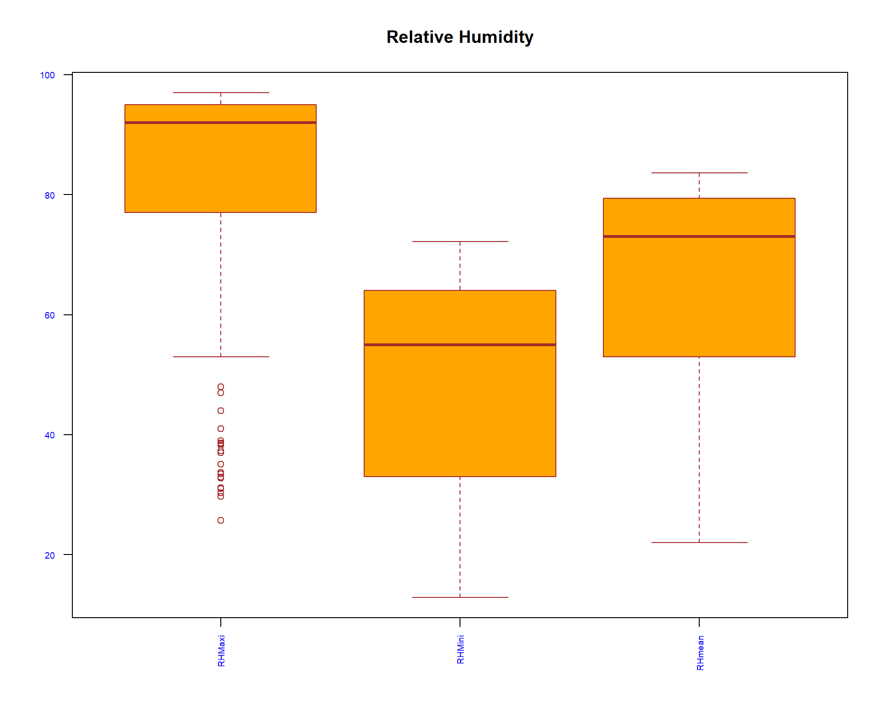
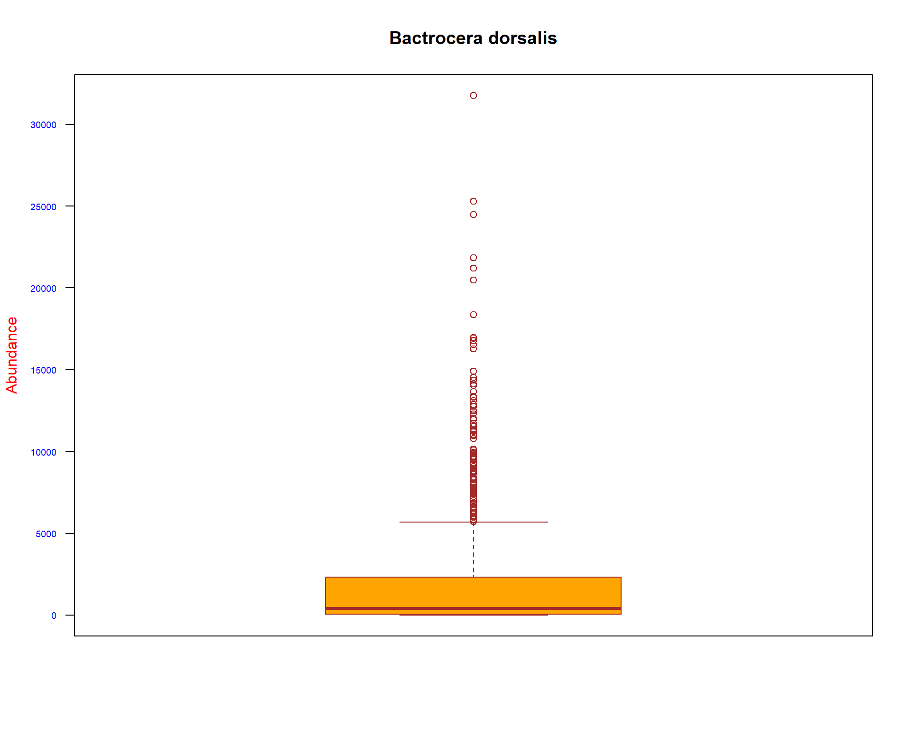
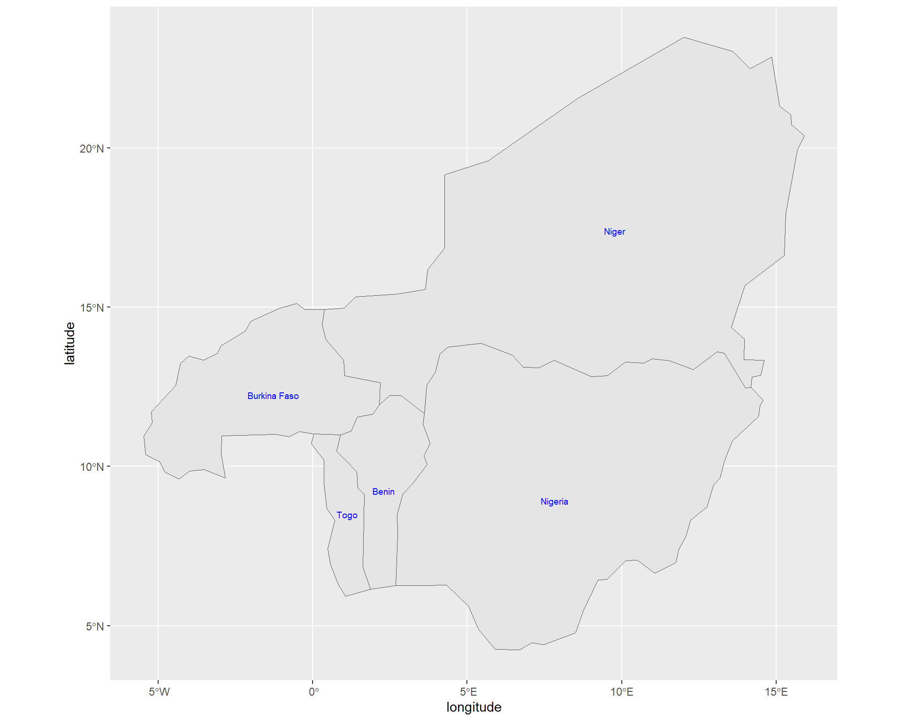
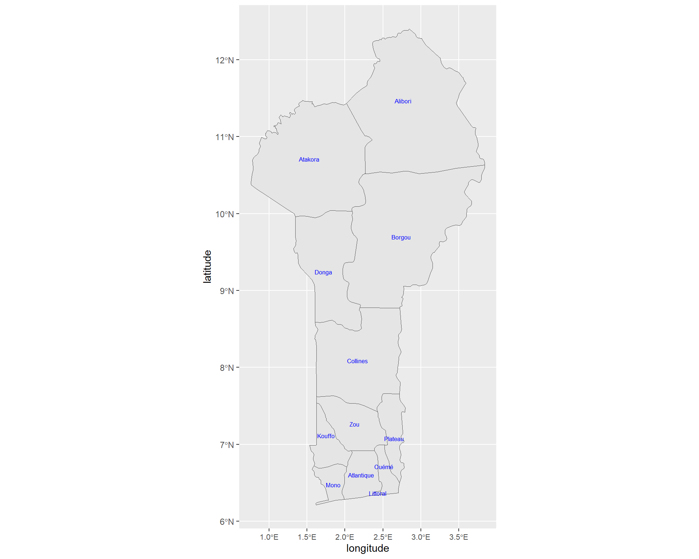
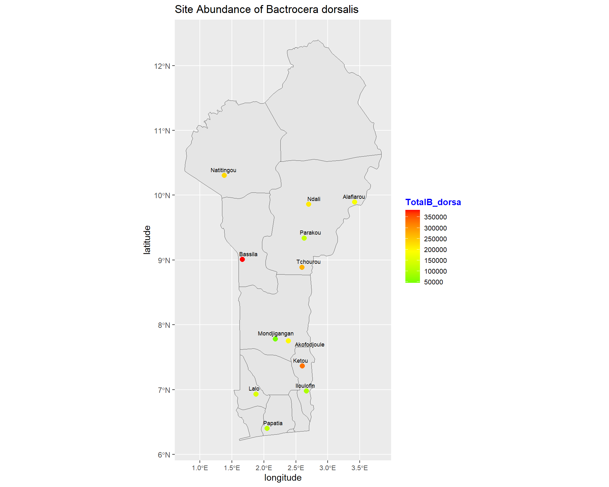
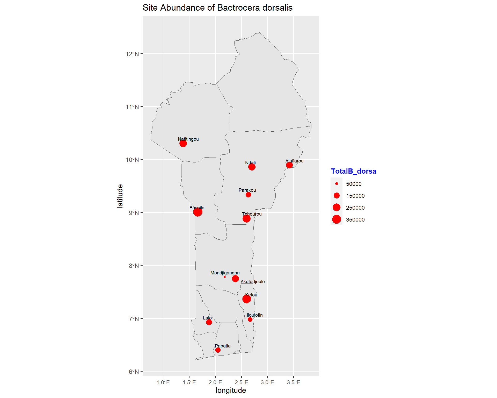
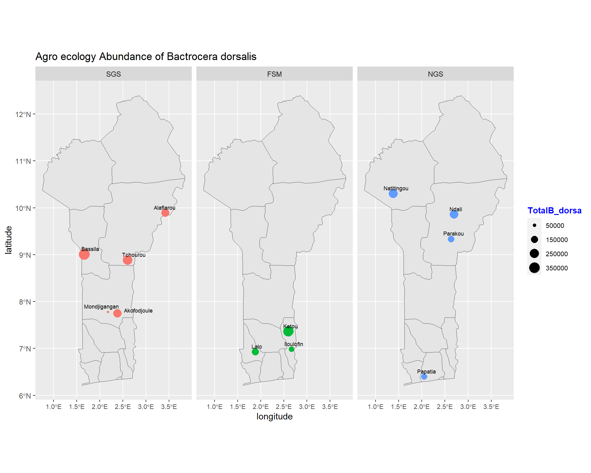
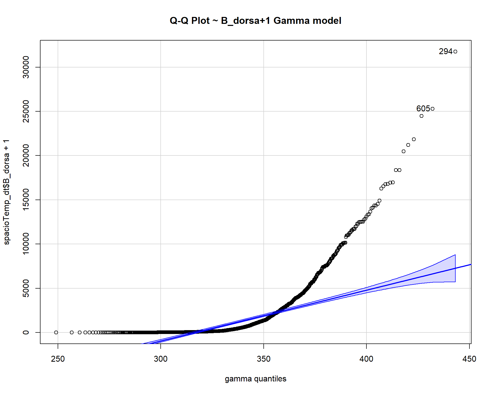
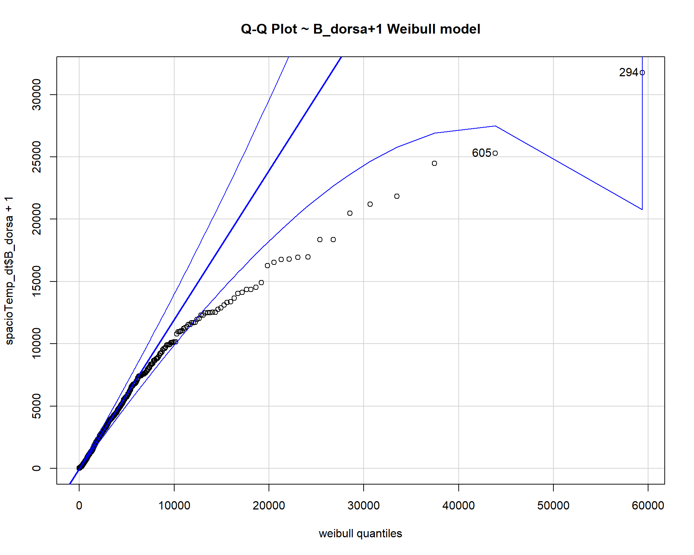
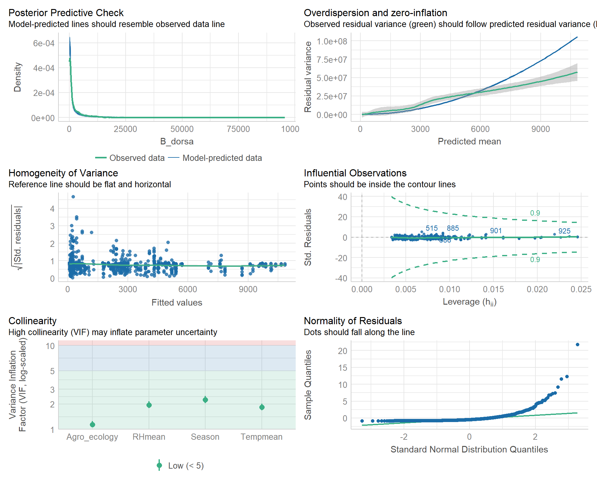

Spatio-Temporal patterns of Bactrocera-dorsalis
- 1 Introduction
- 2 Data Exploration
- 3 Univariate
- 4 Bivariate analysis
- 5 Mapping
- 6 Estimating abundance of Bactrocera
dorsalis
- 6.1 Finding a fitting distribution for the target B_dorsa variable
- 6.2 Splitting the data for training and testing
- 6.3 Poison regression
- 6.4 Poisson regression (the robust or sandwich estimator of the standard errors)
- 6.5 Quasi-Poisson Model
- 6.6 Negative binomial Model
- 6.7 Comparison of the Count Models
- 6.8 model results
- 7 Evaluating our Model
1 Introduction
1.1 Overview
Bactrocera dorsalis is one of the most invasive species of the family of tephritid fruit flies and those of the genus Bactrocera. Previous studies from Benin have revealed that it is the most abundant species. Moreover, studies have also shown that it is a very damaging pest causing harm to most of the crops in countries where it is found. A great need for the study of spatial and temporal characteristics is required to provide more information on the management of this pest.
The study area will be the three agro-ecologies found in Benin which covers an area of 114763 square kilometers. Benin is a West African country that borders Togo to the West, Nigeria to the East and Burkina Faso and Niger to the North. The three agro-ecologies included in the study are: Forest Savannah Mosaic, Northern Guinea Savannah and Southern Guinea Savannah. The Forest Savannah Mosaic extends to the Coast of Benin and separates the upper and lower Guinean forests. The sites in Forest Savannah Mosaic that are under consideration are: Iloulofin, Ketou, and Lalo. Subsequently, in Northern Guinea Savannah Natitingou, Ndali, Parakou and Papatia are the sites considered. In Southern Guinea Savannah, Akofoudjole, Alifarou, Bassila, Mondjigagan, and Tchourou are considered.
1.2 Dataset
This study considers data that was collected over a period of six years (2004-2010) in Benin, West Africa and was obtained from International Centre of Insect Physiology and Ecology (ICIPE). The data is from three agro-ecologies Northern Guinea Savanna (NGS), Southern Guinea Savanna (SGS) and Forest Savanna Mosaic (FSM). The dependent variable under consideration is the mean abundance of Bactrocera dorsalis and the independent variables will be temperature mean, relative humidity mean, season and Agro ecology.
1.3 Objectives
Determine the spatio-temporal patterns of the abundance of Bactrocera dorsalis in Benin.
Determine the mean abundance of Bactrocera dorsalis during the different seasons (Rainy - May to September; Dry - October to April) across the three agro-ecologies (Forest Savannah Mosaic, Northern Guinea Savannah, Southern Guinea Savannah).
Determine the seasonal effect on the mean abundance of Bactrocera dorsalis in Benin.
Map the abundance and seasonal effect variation of Bactrocera dorsalis in Benin in the three agro-ecologies. Mapping will be based on the two seasons in Benin and the three agro-ecologies over the period of 6 years that the data was collected. The spatial distribution within the time period will be shown across the three agro-ecologies during the different seasons. The mapping will be done separately for each of the two seasons and in each agro-ecology. Each agro-ecology will be mapped in accordance with the data collection sites.Geo-referencing will be done to obtain the coordinates of the different sites in the three agro-ecologies. Before geo-referencing, the sites which are replicated will first be made the same so that that they can be georeferenced only once
2 Data Exploration
2.1 loading Relevant packages and Data Set
#Import relevant packages
library(tidyverse)
library(janitor)
library(readr)
library(plotly)
library(knitr)2.2 loading Data Set
# Reading our dataset
spacioTemp_dt_raw <- read_csv('https://raw.githubusercontent.com/reinpmomz/Spatio-Temporal_patterns_Bactrocera-dorsalis/master/data/Male_lures.csv')
#View(spacioTemp_dt_raw)2.3 Adding columns and converting to factors
#Add tempeaturemean, humididy mean and Season columns
spacioTemp_dt <- spacioTemp_dt_raw%>%
mutate(Tempmean = round((TempMaxi + TempMini)/2,1))%>%
mutate(RHmean = round((RHMaxi + RHMini)/2,1))%>%
mutate(Season = if_else(Month == "May" | Month == "June" | Month == "July" |
Month == "August" | Month == "September", "Rainy","Dry"))%>%
mutate(Season= factor(Season, levels = c("Dry", "Rainy")))%>%
mutate(Agro_ecology = factor(Agro_ecology, levels = c("SGS","FSM","NGS")))%>%
mutate(Month = ordered(Month, levels = c("January","February","March", "April","May","June",
"July","August","September", "October","November","December")))%>%
mutate(Site = gsub("Alafiarou1", "Alafiarou", Site))%>%
mutate(Site = gsub("Alafiarou2", "Alafiarou", Site))%>%
mutate(Site = gsub("Tchourou1", "Tchourou", Site))%>%
mutate(Site = gsub("Tchourou2", "Tchourou", Site))%>%
mutate(across(c(Site), as.factor))2.4 Structure of the Data
head(spacioTemp_dt)## # A tibble: 6 x 17
## Agro_ecology Site Month Year TempMaxi TempMini RHMaxi RHMini Rainfall
## <fct> <fct> <ord> <dbl> <dbl> <dbl> <dbl> <dbl> <dbl>
## 1 SGS Akofodjoule Octob~ 2008 33 22.7 94 56.5 122.
## 2 SGS Akofodjoule Octob~ 2008 33 22.7 94 56.5 122.
## 3 SGS Akofodjoule Septe~ 2005 30.6 22.3 97 67 136.
## 4 FSM Ketou July 2008 29.8 22.6 96.5 67.1 0
## 5 FSM Ketou July 2008 29.8 22.6 96.5 67.1 0
## 6 FSM Lalo July 2008 29.8 22.6 96.5 67.1 0
## # ... with 8 more variables: Attractant <chr>, Trap <dbl>, B_dorsa <dbl>,
## # latitude <dbl>, longitude <dbl>, Tempmean <dbl>, RHmean <dbl>, Season <fct>tail(spacioTemp_dt)## # A tibble: 6 x 17
## Agro_ecology Site Month Year TempMaxi TempMini RHMaxi RHMini Rainfall
## <fct> <fct> <ord> <dbl> <dbl> <dbl> <dbl> <dbl> <dbl>
## 1 NGS Natitingou August 2006 29.7 22.1 29.7 22.1 253
## 2 NGS Natitingou August 2006 29.7 22.1 29.7 22.1 253
## 3 FSM Ketou Novemb~ 2008 34.4 24.1 25.7 47.4 0
## 4 FSM Ketou Novemb~ 2008 34.4 24.1 25.7 47.4 0
## 5 FSM Lalo Novemb~ 2008 34.4 24.1 25.7 47.4 7.5
## 6 FSM Lalo Novemb~ 2008 34.4 24.1 25.7 47.4 7.5
## # ... with 8 more variables: Attractant <chr>, Trap <dbl>, B_dorsa <dbl>,
## # latitude <dbl>, longitude <dbl>, Tempmean <dbl>, RHmean <dbl>, Season <fct># How many variables and observations are there?
ncol(spacioTemp_dt)## [1] 17nrow(spacioTemp_dt)## [1] 1166#learn more about the dataset
#help(spacioTemp_dt)
#??spacioTemp_dt
str(spacioTemp_dt)## tibble [1,166 x 17] (S3: tbl_df/tbl/data.frame)
## $ Agro_ecology: Factor w/ 3 levels "SGS","FSM","NGS": 1 1 1 2 2 2 2 3 3 3 ...
## $ Site : Factor w/ 12 levels "Akofodjoule",..: 1 1 1 5 5 6 6 8 8 8 ...
## $ Month : Ord.factor w/ 12 levels "January"<"February"<..: 10 10 9 7 7 7 7 8 8 8 ...
## $ Year : num [1:1166] 2008 2008 2005 2008 2008 ...
## $ TempMaxi : num [1:1166] 33 33 30.6 29.8 29.8 29.8 29.8 29.4 29.4 29.4 ...
## $ TempMini : num [1:1166] 22.7 22.7 22.3 22.6 22.6 22.6 22.6 21.3 21.3 21.3 ...
## $ RHMaxi : num [1:1166] 94 94 97 96.5 96.5 96.5 96.5 96.1 96.1 96.1 ...
## $ RHMini : num [1:1166] 56.5 56.5 67 67.1 67.1 67.1 67.1 70.8 70.8 70.8 ...
## $ Rainfall : num [1:1166] 122 122 136 0 0 ...
## $ Attractant : chr [1:1166] "ME" "ME" "ME" "ME" ...
## $ Trap : num [1:1166] 1 2 1 1 2 1 2 1 2 3 ...
## $ B_dorsa : num [1:1166] 130 80 497 7758 5867 ...
## $ latitude : num [1:1166] 7.75 7.75 7.75 7.36 7.36 ...
## $ longitude : num [1:1166] 2.38 2.38 2.38 2.6 2.6 ...
## $ Tempmean : num [1:1166] 27.9 27.9 26.5 26.2 26.2 26.2 26.2 25.4 25.4 25.4 ...
## $ RHmean : num [1:1166] 75.2 75.2 82 81.8 81.8 81.8 81.8 83.4 83.4 83.4 ...
## $ Season : Factor w/ 2 levels "Dry","Rainy": 1 1 2 2 2 2 2 2 2 2 ...#class(spacioTemp_dt)
#typeof(spacioTemp_dt)
#length(spacioTemp_dt)
names(spacioTemp_dt) #display variable names## [1] "Agro_ecology" "Site" "Month" "Year" "TempMaxi"
## [6] "TempMini" "RHMaxi" "RHMini" "Rainfall" "Attractant"
## [11] "Trap" "B_dorsa" "latitude" "longitude" "Tempmean"
## [16] "RHmean" "Season"#attributes(spacioTemp_dt) names(spacioTemp_dt), class(spacioTemp_dt), row.names(spacioTemp_dt)2.5 Missing data and Outliers
which(!complete.cases(spacioTemp_dt))## integer(0)which(is.na(spacioTemp_dt$B_dorsa)) #check for missing values## integer(0)There were no missing values in our data set.
2.6 Outliers
#We use boxplot to visualize for any outliers
boxplot(spacioTemp_dt [, c("TempMaxi", "TempMini", "Tempmean")], main="Temperature",
xlab="",
ylab="",
col="orange",
border="brown", las = 2, cex.axis = 0.6, col.axis = 'blue', col.lab = 'red')
boxplot(spacioTemp_dt [, c("RHMaxi",
"RHMini", "RHmean")], main="Relative Humidity",
xlab="",
ylab="",
col="orange",
border="brown", las = 2, cex.axis = 0.6, col.axis = 'blue', col.lab = 'red')
boxplot(spacioTemp_dt [, c("B_dorsa")], main="Bactrocera dorsalis",
xlab="",
ylab="Abundance",
col="orange",
border="brown", las = 2, cex.axis = 0.6, col.axis = 'blue', col.lab = 'red')
boxplot(spacioTemp_dt [, c("Rainfall")], main="Rainfall",
xlab="rainfall",
ylab="",
col="orange",
border="brown", las = 2, cex.axis = 0.6, col.axis = 'blue', col.lab = 'red')
3 Univariate
3.1 Normality of continous variables
There are several methods for normality test such as Kolmogorov-Smirnov (K-S) normality test and Shapiro-Wilk’s test.
Shapiro-Wilk’s method is widely recommended for normality test and it provides better power than K-S. It is based on the correlation between the data and the corresponding normal scores.
If the p-value > 0.05, it implies that the distribution of the data are not significantly different from normal distribution. In other words, we can assume the normality.
shapiro.test(spacioTemp_dt$TempMaxi)##
## Shapiro-Wilk normality test
##
## data: spacioTemp_dt$TempMaxi
## W = 0.95575, p-value < 2.2e-16shapiro.test(spacioTemp_dt$TempMini)##
## Shapiro-Wilk normality test
##
## data: spacioTemp_dt$TempMini
## W = 0.9708, p-value = 1.393e-14shapiro.test(spacioTemp_dt$RHMaxi)##
## Shapiro-Wilk normality test
##
## data: spacioTemp_dt$RHMaxi
## W = 0.72721, p-value < 2.2e-16shapiro.test(spacioTemp_dt$RHMini)##
## Shapiro-Wilk normality test
##
## data: spacioTemp_dt$RHMini
## W = 0.89575, p-value < 2.2e-16shapiro.test(spacioTemp_dt$Rainfall)##
## Shapiro-Wilk normality test
##
## data: spacioTemp_dt$Rainfall
## W = 0.88999, p-value < 2.2e-16shapiro.test(spacioTemp_dt$B_dorsa)##
## Shapiro-Wilk normality test
##
## data: spacioTemp_dt$B_dorsa
## W = 0.60906, p-value < 2.2e-16shapiro.test(spacioTemp_dt$Tempmean)##
## Shapiro-Wilk normality test
##
## data: spacioTemp_dt$Tempmean
## W = 0.95547, p-value < 2.2e-16shapiro.test(spacioTemp_dt$RHmean)##
## Shapiro-Wilk normality test
##
## data: spacioTemp_dt$RHmean
## W = 0.86416, p-value < 2.2e-163.2 Descriptive Statistics
library(gtsummary)
library(flextable)
set_gtsummary_theme(list(
"tbl_summary-fn:percent_fun" = function(x) style_percent(x, digits = 1),
"tbl_summary-str:categorical_stat" = "{n} ({p}%)"
))
# Setting `Compact` theme
theme_gtsummary_compact()# make dataset with variables to summarize
tbl_summary(spacioTemp_dt%>%
dplyr::select(-Attractant, -latitude, -longitude),
type = list(
c(Year, Trap) ~ "categorical",
all_dichotomous() ~ "categorical",
all_continuous() ~ "continuous2")
, statistic = all_continuous() ~ c(
"{mean} ({sd})",
"{median} ({p25}, {p75})",
"{min}, {max}")
, digits = all_continuous() ~ 2
, missing = "always" # don't list missing data separately
,missing_text = "Missing"
) %>%
modify_header(label = "**Descriptives**") %>% # update the column header
bold_labels() %>%
italicize_levels()%>%
add_n() # add column with total number of non-missing observations| Descriptives | N | N = 1,1661 |
|---|---|---|
| Agro_ecology | 1,166 | |
| SGS | 489 (41.9%) | |
| FSM | 195 (16.7%) | |
| NGS | 482 (41.3%) | |
| Missing | 0 | |
| Site | 1,166 | |
| Akofodjoule | 129 (11.1%) | |
| Alafiarou | 100 (8.58%) | |
| Bassila | 145 (12.4%) | |
| Iloulofin | 15 (1.29%) | |
| Ketou | 98 (8.40%) | |
| Lalo | 82 (7.03%) | |
| Mondjigangan | 15 (1.29%) | |
| Natitingou | 145 (12.4%) | |
| Ndali | 157 (13.5%) | |
| Papatia | 82 (7.03%) | |
| Parakou | 98 (8.40%) | |
| Tchourou | 100 (8.58%) | |
| Missing | 0 | |
| Month | 1,166 | |
| January | 85 (7.29%) | |
| February | 89 (7.63%) | |
| March | 91 (7.80%) | |
| April | 102 (8.75%) | |
| May | 115 (9.86%) | |
| June | 115 (9.86%) | |
| July | 116 (9.95%) | |
| August | 116 (9.95%) | |
| September | 84 (7.20%) | |
| October | 84 (7.20%) | |
| November | 84 (7.20%) | |
| December | 85 (7.29%) | |
| Missing | 0 | |
| Year | 1,166 | |
| 2004 | 1 (0.09%) | |
| 2005 | 34 (2.92%) | |
| 2006 | 81 (6.95%) | |
| 2007 | 185 (15.9%) | |
| 2008 | 228 (19.6%) | |
| 2009 | 372 (31.9%) | |
| 2010 | 265 (22.7%) | |
| Missing | 0 | |
| TempMaxi | 1,166 | |
| Mean (SD) | 33.65 (3.02) | |
| Median (IQR) | 33.40 (30.90, 36.30) | |
| Range | 28.70, 39.80 | |
| Missing | 0 | |
| TempMini | 1,166 | |
| Mean (SD) | 22.42 (1.54) | |
| Median (IQR) | 22.40 (21.60, 23.40) | |
| Range | 16.10, 25.70 | |
| Missing | 0 | |
| RHMaxi | 1,166 | |
| Mean (SD) | 84.11 (16.23) | |
| Median (IQR) | 92.00 (77.00, 95.00) | |
| Range | 25.70, 97.00 | |
| Missing | 0 | |
| RHMini | 1,166 | |
| Mean (SD) | 48.16 (17.71) | |
| Median (IQR) | 55.00 (33.00, 64.00) | |
| Range | 12.90, 72.20 | |
| Missing | 0 | |
| Rainfall | 1,166 | |
| Mean (SD) | 100.30 (96.08) | |
| Median (IQR) | 88.40 (0.00, 168.70) | |
| Range | 0.00, 349.70 | |
| Missing | 0 | |
| Trap | 1,166 | |
| 1 | 483 (41.4%) | |
| 2 | 430 (36.9%) | |
| 3 | 253 (21.7%) | |
| Missing | 0 | |
| B_dorsa | 1,166 | |
| Mean (SD) | 1,988.30 (3,521.78) | |
| Median (IQR) | 416.00 (67.00, 2,315.00) | |
| Range | 0.00, 31,769.00 | |
| Missing | 0 | |
| Tempmean | 1,166 | |
| Mean (SD) | 28.04 (1.82) | |
| Median (IQR) | 27.80 (26.50, 29.40) | |
| Range | 24.90, 32.00 | |
| Missing | 0 | |
| RHmean | 1,166 | |
| Mean (SD) | 66.13 (16.04) | |
| Median (IQR) | 73.00 (53.00, 79.40) | |
| Range | 22.00, 83.60 | |
| Missing | 0 | |
| Season | 1,166 | |
| Dry | 620 (53.2%) | |
| Rainy | 546 (46.8%) | |
| Missing | 0 | |
| 1 n (%) | ||
4 Bivariate analysis
4.1 Difference Frequency table
# make dataset with variables to summarize
tbl_summary(spacioTemp_dt%>%
dplyr::select(Agro_ecology, TempMaxi, TempMini, RHMaxi, RHMini, Rainfall,
B_dorsa, Tempmean, RHmean),
by = Agro_ecology,
type = list(
all_continuous() ~ "continuous2")
, statistic = all_continuous() ~ c(
"{mean} ({sd})",
"{median} ({p25}, {p75})",
"{min}, {max}")
, digits = all_continuous() ~ 2
, missing = "ifany" # don't list missing data separately
,missing_text = "Missing"
) %>%
modify_header(label = "**Variables**") %>% # update the column header
bold_labels() %>%
italicize_levels()%>%
add_n()%>% # add column with total number of non-missing observations
add_p(pvalue_fun = ~style_pvalue(.x, digits = 3)) %>%
bold_p(t= 0.05) %>% # bold p-values under a given threshold (default 0.05)
#add_overall() %>%
#add_difference() %>% #add column for difference between two group, confidence interval, and p-value
modify_spanning_header(c("stat_1", "stat_2" , "stat_3") ~ "**Agro ecology**") %>%
#modify_caption("**Table 1.**")%>%
modify_footnote(
all_stat_cols() ~ "Mean (SD); Median (IQR); Range"
)| Variables | N | Agro ecology | p-value2 | ||
|---|---|---|---|---|---|
| SGS, N = 4891 | FSM, N = 1951 | NGS, N = 4821 | |||
| TempMaxi | 1,166 | <0.001 | |||
| Mean (SD) | 33.66 (3.12) | 32.86 (2.37) | 33.96 (3.10) | ||
| Median (IQR) | 33.40 (30.70, 36.40) | 32.90 (30.50, 35.00) | 33.60 (31.30, 36.50) | ||
| Range | 28.80, 39.80 | 29.10, 37.50 | 28.70, 39.80 | ||
| TempMini | 1,166 | <0.001 | |||
| Mean (SD) | 22.55 (1.30) | 23.61 (0.93) | 21.81 (1.66) | ||
| Median (IQR) | 22.40 (21.70, 23.40) | 23.50 (22.85, 24.30) | 21.80 (21.20, 22.98) | ||
| Range | 18.20, 25.40 | 21.40, 25.70 | 16.10, 25.00 | ||
| RHMaxi | 1,166 | <0.001 | |||
| Mean (SD) | 85.88 (12.53) | 91.02 (13.43) | 79.53 (19.03) | ||
| Median (IQR) | 92.00 (82.00, 94.00) | 95.00 (93.00, 96.00) | 89.00 (68.00, 94.00) | ||
| Range | 31.00, 97.00 | 25.70, 96.50 | 29.70, 96.10 | ||
| RHMini | 1,166 | <0.001 | |||
| Mean (SD) | 47.51 (17.52) | 55.86 (11.81) | 45.70 (19.00) | ||
| Median (IQR) | 53.00 (32.00, 64.00) | 60.00 (47.40, 65.00) | 49.90 (24.85, 65.00) | ||
| Range | 13.30, 71.00 | 22.60, 71.00 | 12.90, 72.20 | ||
| Rainfall | 1,166 | 0.027 | |||
| Mean (SD) | 94.31 (88.95) | 92.17 (78.98) | 109.67 (108.00) | ||
| Median (IQR) | 92.30 (0.00, 155.90) | 79.90 (28.10, 139.65) | 89.60 (2.10, 206.70) | ||
| Range | 0.00, 349.70 | 0.00, 340.90 | 0.00, 344.20 | ||
| B_dorsa | 1,166 | <0.001 | |||
| Mean (SD) | 2,194.10 (3,908.67) | 2,918.31 (4,054.90) | 1,403.25 (2,678.08) | ||
| Median (IQR) | 407.00 (70.00, 2,627.00) | 1,286.00 (175.00, 3,782.50) | 246.50 (29.50, 1,353.00) | ||
| Range | 0.00, 31,769.00 | 21.00, 24,471.00 | 0.00, 21,848.00 | ||
| Tempmean | 1,166 | 0.016 | |||
| Mean (SD) | 28.11 (1.89) | 28.23 (1.55) | 27.88 (1.85) | ||
| Median (IQR) | 27.80 (26.50, 29.70) | 28.40 (26.60, 29.50) | 27.60 (26.40, 28.98) | ||
| Range | 25.20, 32.00 | 25.80, 31.40 | 24.90, 32.00 | ||
| RHmean | 1,166 | <0.001 | |||
| Mean (SD) | 66.69 (14.50) | 73.44 (10.22) | 62.61 (18.26) | ||
| Median (IQR) | 72.50 (55.50, 79.00) | 78.00 (69.15, 80.50) | 70.00 (49.50, 79.00) | ||
| Range | 22.20, 83.50 | 36.50, 83.50 | 22.00, 83.60 | ||
| 1 Mean (SD); Median (IQR); Range | |||||
| 2 Kruskal-Wallis rank sum test | |||||
# make dataset with variables to summarize
tbl_summary(spacioTemp_dt%>%
dplyr::select(Season, TempMaxi, TempMini, RHMaxi, RHMini, Rainfall,
B_dorsa, Tempmean, RHmean),
by = Season,
type = list(
all_continuous() ~ "continuous2")
, statistic = all_continuous() ~ c(
"{mean} ({sd})",
"{median} ({p25}, {p75})",
"{min}, {max}")
, digits = all_continuous() ~ 2
, missing = "ifany" # don't list missing data separately
,missing_text = "Missing"
) %>%
modify_header(label = "**Variables**") %>% # update the column header
bold_labels() %>%
italicize_levels()%>%
add_n()%>% # add column with total number of non-missing observations
add_p(pvalue_fun = ~style_pvalue(.x, digits = 3)) %>%
bold_p(t= 0.05) %>% # bold p-values under a given threshold (default 0.05)
#add_overall() %>%
#add_difference() %>% #add column for difference between two group, confidence interval, and p-value
modify_spanning_header(c("stat_1", "stat_2") ~ "**Season**") %>%
#modify_caption("**Table 2.**")%>%
modify_footnote(
all_stat_cols() ~ "Mean (SD); Median (IQR); Range"
)| Variables | N | Season | p-value2 | |
|---|---|---|---|---|
| Dry, N = 6201 | Rainy, N = 5461 | |||
| TempMaxi | 1,166 | <0.001 | ||
| Mean (SD) | 35.80 (2.16) | 31.21 (1.73) | ||
| Median (IQR) | 36.00 (34.40, 37.30) | 30.90 (29.90, 32.50) | ||
| Range | 30.20, 39.80 | 28.70, 37.20 | ||
| TempMini | 1,166 | <0.001 | ||
| Mean (SD) | 22.48 (1.97) | 22.35 (0.82) | ||
| Median (IQR) | 23.00 (21.10, 24.10) | 22.30 (21.70, 22.90) | ||
| Range | 16.10, 25.70 | 19.00, 24.60 | ||
| RHMaxi | 1,166 | <0.001 | ||
| Mean (SD) | 76.77 (17.51) | 92.44 (9.15) | ||
| Median (IQR) | 82.10 (66.00, 92.00) | 94.00 (92.00, 95.40) | ||
| Range | 25.70, 96.00 | 29.70, 97.00 | ||
| RHMini | 1,166 | <0.001 | ||
| Mean (SD) | 36.22 (14.68) | 61.72 (8.89) | ||
| Median (IQR) | 35.00 (23.00, 47.00) | 64.00 (58.00, 66.85) | ||
| Range | 12.90, 65.10 | 18.00, 72.20 | ||
| Rainfall | 1,166 | <0.001 | ||
| Mean (SD) | 41.75 (55.16) | 166.79 (89.15) | ||
| Median (IQR) | 9.20 (0.00, 80.90) | 168.70 (111.22, 231.15) | ||
| Range | 0.00, 236.30 | 0.00, 349.70 | ||
| B_dorsa | 1,166 | <0.001 | ||
| Mean (SD) | 300.51 (821.70) | 3,904.83 (4,338.82) | ||
| Median (IQR) | 80.00 (23.00, 202.25) | 2,370.50 (979.00, 5,147.50) | ||
| Range | 0.00, 7,553.00 | 6.00, 31,769.00 | ||
| Tempmean | 1,166 | <0.001 | ||
| Mean (SD) | 29.14 (1.60) | 26.78 (1.12) | ||
| Median (IQR) | 29.00 (27.60, 30.60) | 26.50 (25.90, 27.60) | ||
| Range | 24.90, 32.00 | 25.00, 30.30 | ||
| RHmean | 1,166 | <0.001 | ||
| Mean (SD) | 56.49 (14.85) | 77.08 (8.58) | ||
| Median (IQR) | 56.25 (46.00, 68.00) | 79.00 (75.50, 80.72) | ||
| Range | 22.00, 80.10 | 25.60, 83.60 | ||
| 1 Mean (SD); Median (IQR); Range | ||||
| 2 Wilcoxon rank sum test | ||||
# make dataset with variables to summarize
tbl_summary(spacioTemp_dt%>%
dplyr::select(Site, TempMaxi, TempMini, RHMaxi, RHMini, Rainfall,
B_dorsa, Tempmean, RHmean),
by = Site,
type = list(
all_continuous() ~ "continuous2")
, statistic = all_continuous() ~ c(
"{mean} ({sd})",
"{median} ({p25}, {p75})",
"{min}, {max}")
, digits = all_continuous() ~ 2
, missing = "ifany" # don't list missing data separately
,missing_text = "Missing"
) %>%
modify_header(label = "**Variables**") %>% # update the column header
bold_labels() %>%
italicize_levels()%>%
add_n()%>% # add column with total number of non-missing observations
add_p(pvalue_fun = ~style_pvalue(.x, digits = 3)) %>%
bold_p(t= 0.05) %>% # bold p-values under a given threshold (default 0.05)
#add_overall() %>%
#add_difference() %>% #add column for difference between two group, confidence interval, and p-value
modify_spanning_header(c("stat_1", "stat_2", "stat_3", "stat_4",
"stat_5", "stat_6", "stat_7", "stat_8",
"stat_9", "stat_10", "stat_11", "stat_12") ~ "**Site**") %>%
#modify_caption("**Table 2.**")%>%
modify_footnote(
all_stat_cols() ~ "Mean (SD); Median (IQR); Range"
)| Variables | N | Site | p-value2 | |||||||||||
|---|---|---|---|---|---|---|---|---|---|---|---|---|---|---|
| Akofodjoule, N = 1291 | Alafiarou, N = 1001 | Bassila, N = 1451 | Iloulofin, N = 151 | Ketou, N = 981 | Lalo, N = 821 | Mondjigangan, N = 151 | Natitingou, N = 1451 | Ndali, N = 1571 | Papatia, N = 821 | Parakou, N = 981 | Tchourou, N = 1001 | |||
| TempMaxi | 1,166 | <0.001 | ||||||||||||
| Mean (SD) | 34.04 (2.84) | 32.85 (3.17) | 34.54 (3.09) | 32.14 (1.98) | 32.99 (2.46) | 32.84 (2.32) | 32.72 (2.29) | 33.97 (3.00) | 34.14 (3.20) | 33.87 (2.99) | 33.72 (3.19) | 32.85 (3.17) | ||
| Median (IQR) | 34.10 (31.40, 36.60) | 32.50 (30.30, 35.90) | 34.40 (31.60, 36.90) | 32.10 (30.40, 33.40) | 33.10 (30.58, 35.00) | 32.90 (30.80, 35.00) | 32.90 (30.60, 33.60) | 33.50 (31.40, 36.50) | 34.10 (31.30, 36.70) | 33.20 (31.50, 36.27) | 33.50 (30.90, 36.40) | 32.50 (30.30, 35.90) | ||
| Range | 29.10, 39.10 | 28.80, 38.30 | 28.90, 39.80 | 29.80, 35.00 | 29.10, 37.50 | 29.10, 37.10 | 30.20, 36.30 | 28.70, 38.90 | 28.80, 39.80 | 28.80, 38.90 | 28.80, 39.40 | 28.80, 38.30 | ||
| TempMini | 1,166 | <0.001 | ||||||||||||
| Mean (SD) | 23.09 (1.08) | 22.46 (1.23) | 22.10 (1.40) | 23.94 (1.00) | 23.64 (0.97) | 23.51 (0.85) | 23.58 (0.95) | 21.42 (1.88) | 22.16 (1.40) | 21.37 (1.80) | 22.23 (1.34) | 22.46 (1.23) | ||
| Median (IQR) | 23.00 (22.40, 23.80) | 22.40 (21.70, 23.40) | 22.10 (21.50, 23.10) | 24.10 (22.90, 24.60) | 23.50 (22.90, 24.30) | 23.50 (22.70, 24.10) | 23.80 (22.70, 24.10) | 21.40 (20.80, 22.70) | 22.00 (21.40, 23.30) | 21.40 (20.38, 22.30) | 21.95 (21.42, 23.30) | 22.40 (21.70, 23.40) | ||
| Range | 20.10, 25.40 | 20.30, 24.90 | 18.20, 24.90 | 22.80, 25.30 | 21.40, 25.70 | 21.40, 24.90 | 22.40, 24.90 | 16.10, 25.00 | 18.20, 24.90 | 17.80, 25.00 | 18.20, 24.90 | 20.30, 24.90 | ||
| RHMaxi | 1,166 | <0.001 | ||||||||||||
| Mean (SD) | 90.22 (6.94) | 85.80 (11.18) | 81.53 (16.66) | 85.00 (21.22) | 91.05 (13.42) | 92.09 (11.44) | 91.60 (1.55) | 72.44 (23.61) | 82.47 (15.84) | 81.24 (16.94) | 83.86 (14.63) | 85.80 (11.18) | ||
| Median (IQR) | 92.00 (88.00, 94.00) | 92.00 (77.00, 94.00) | 89.00 (76.00, 94.00) | 95.00 (95.00, 95.00) | 95.00 (93.00, 96.00) | 95.00 (93.00, 96.00) | 92.00 (90.00, 92.00) | 82.10 (56.90, 94.00) | 90.00 (77.00, 94.00) | 89.70 (68.25, 95.00) | 90.50 (77.62, 94.00) | 92.00 (77.00, 94.00) | ||
| Range | 56.00, 97.00 | 60.00, 96.00 | 31.00, 96.00 | 44.00, 96.00 | 25.70, 96.50 | 25.70, 96.50 | 90.00, 94.00 | 29.70, 96.10 | 31.00, 96.00 | 31.20, 96.10 | 31.00, 96.00 | 60.00, 96.00 | ||
| RHMini | 1,166 | <0.001 | ||||||||||||
| Mean (SD) | 49.76 (14.32) | 48.90 (18.12) | 42.53 (18.96) | 61.40 (5.01) | 55.47 (11.97) | 55.31 (12.33) | 57.60 (6.95) | 45.00 (19.28) | 43.87 (19.26) | 50.94 (17.09) | 45.30 (19.18) | 48.90 (18.12) | ||
| Median (IQR) | 53.00 (37.00, 62.00) | 58.00 (35.00, 65.00) | 47.00 (23.70, 61.00) | 61.00 (59.00, 65.00) | 59.50 (47.00, 65.00) | 60.00 (47.40, 65.00) | 57.00 (57.00, 62.00) | 42.00 (24.30, 65.00) | 50.00 (23.70, 63.00) | 58.00 (35.00, 66.00) | 50.30 (23.70, 64.00) | 58.00 (35.00, 65.00) | ||
| Range | 21.10, 71.00 | 17.00, 70.00 | 13.30, 68.00 | 54.00, 68.00 | 22.60, 71.00 | 22.60, 71.00 | 46.00, 66.00 | 12.90, 72.20 | 13.30, 70.00 | 12.90, 72.20 | 13.30, 70.00 | 17.00, 70.00 | ||
| Rainfall | 1,166 | <0.001 | ||||||||||||
| Mean (SD) | 87.17 (83.33) | 112.11 (90.69) | 69.34 (86.94) | 165.50 (80.65) | 96.07 (86.23) | 74.10 (59.73) | 159.62 (46.79) | 108.80 (111.58) | 103.59 (101.79) | 118.24 (116.89) | 113.54 (105.58) | 112.11 (90.69) | ||
| Median (IQR) | 73.10 (0.00, 149.80) | 124.30 (0.00, 168.70) | 9.40 (0.00, 117.20) | 216.30 (129.70, 216.50) | 76.70 (28.30, 131.10) | 78.40 (3.50, 110.60) | 143.40 (123.10, 208.00) | 89.60 (1.10, 180.90) | 85.40 (4.00, 191.70) | 89.60 (1.10, 229.50) | 94.50 (7.00, 214.75) | 124.30 (0.00, 168.70) | ||
| Range | 0.00, 271.20 | 0.00, 312.10 | 0.00, 349.70 | 28.30, 236.70 | 0.00, 340.90 | 0.00, 192.60 | 105.80, 217.80 | 0.00, 344.20 | 0.00, 304.30 | 0.00, 344.20 | 0.00, 304.30 | 0.00, 312.10 | ||
| B_dorsa | 1,166 | <0.001 | ||||||||||||
| Mean (SD) | 1,519.26 (2,952.50) | 1,800.30 (2,977.75) | 2,631.55 (4,674.44) | 6,234.67 (4,015.39) | 3,344.86 (4,660.65) | 1,801.89 (2,657.52) | 2,989.27 (2,358.66) | 1,599.92 (2,678.12) | 1,361.18 (2,488.41) | 1,372.11 (3,404.97) | 1,205.70 (2,275.13) | 2,704.87 (4,605.62) | ||
| Median (IQR) | 279.00 (45.00, 1,580.00) | 364.50 (65.25, 2,191.25) | 680.00 (135.00, 2,627.00) | 5,547.00 (3,063.00, 8,767.50) | 1,316.50 (174.50, 4,385.00) | 991.50 (115.50, 2,145.25) | 2,920.00 (1,058.00, 4,313.50) | 341.00 (19.00, 1,884.00) | 312.00 (55.00, 1,394.00) | 116.00 (16.25, 996.00) | 131.50 (37.25, 1,121.75) | 238.00 (46.00, 3,955.50) | ||
| Range | 2.00, 16,792.00 | 1.00, 12,872.00 | 12.00, 31,769.00 | 1,362.00, 14,370.00 | 27.00, 24,471.00 | 21.00, 14,370.00 | 52.00, 7,456.00 | 0.00, 12,521.00 | 0.00, 16,963.00 | 0.00, 21,848.00 | 3.00, 10,953.00 | 0.00, 20,479.00 | ||
| Tempmean | 1,166 | <0.001 | ||||||||||||
| Mean (SD) | 28.57 (1.78) | 27.66 (1.90) | 28.32 (1.87) | 28.04 (1.46) | 28.31 (1.61) | 28.17 (1.51) | 28.16 (1.63) | 27.69 (1.81) | 28.15 (1.92) | 27.62 (1.68) | 27.97 (1.91) | 27.66 (1.90) | ||
| Median (IQR) | 28.40 (27.00, 30.20) | 27.40 (26.00, 28.70) | 28.20 (26.90, 29.70) | 28.10 (26.60, 29.00) | 28.40 (26.68, 29.60) | 28.40 (26.90, 29.50) | 28.40 (26.60, 28.90) | 27.20 (26.30, 29.00) | 27.60 (26.50, 29.70) | 27.30 (26.40, 28.60) | 27.60 (26.40, 28.90) | 27.40 (26.00, 28.70) | ||
| Range | 25.20, 31.90 | 25.30, 31.40 | 25.50, 32.00 | 26.40, 30.10 | 25.80, 31.40 | 25.80, 30.80 | 26.30, 30.60 | 24.90, 31.60 | 25.30, 32.00 | 25.00, 31.60 | 25.30, 31.80 | 25.30, 31.40 | ||
| RHmean | 1,166 | <0.001 | ||||||||||||
| Mean (SD) | 69.99 (10.04) | 67.35 (14.47) | 62.02 (17.15) | 73.20 (12.64) | 73.26 (10.21) | 73.70 (9.89) | 74.60 (4.00) | 58.72 (21.08) | 63.16 (16.89) | 66.09 (16.72) | 64.57 (16.23) | 67.35 (14.47) | ||
| Median (IQR) | 72.50 (63.00, 78.50) | 75.50 (55.50, 79.00) | 68.00 (51.00, 76.50) | 78.00 (77.00, 80.50) | 77.50 (68.80, 80.50) | 78.00 (69.70, 80.50) | 74.50 (74.50, 76.00) | 61.10 (40.40, 78.00) | 70.00 (51.00, 78.50) | 74.50 (50.50, 80.38) | 70.90 (52.00, 78.88) | 75.50 (55.50, 79.00) | ||
| Range | 40.00, 83.50 | 38.50, 83.00 | 22.20, 81.50 | 49.00, 81.50 | 36.50, 83.50 | 36.50, 83.50 | 68.00, 80.00 | 22.00, 83.60 | 22.20, 83.00 | 22.00, 83.60 | 22.20, 83.00 | 38.50, 83.00 | ||
| 1 Mean (SD); Median (IQR); Range | ||||||||||||||
| 2 Kruskal-Wallis rank sum test | ||||||||||||||
# make dataset with variables to summarize
tbl_summary(spacioTemp_dt%>%
dplyr::select(Year, TempMaxi, TempMini, RHMaxi, RHMini, Rainfall,
B_dorsa, Tempmean, RHmean),
by = Year,
type = list(
all_continuous() ~ "continuous2")
, statistic = all_continuous() ~ c(
"{mean} ({sd})",
"{median} ({p25}, {p75})",
"{min}, {max}")
, digits = all_continuous() ~ 2
, missing = "ifany" # don't list missing data separately
,missing_text = "Missing"
) %>%
modify_header(label = "**Variables**") %>% # update the column header
bold_labels() %>%
italicize_levels()%>%
add_n()%>% # add column with total number of non-missing observations
add_p(pvalue_fun = ~style_pvalue(.x, digits = 3)) %>%
bold_p(t= 0.05) %>% # bold p-values under a given threshold (default 0.05)
#add_overall() %>%
#add_difference() %>% #add column for difference between two group, confidence interval, and p-value
modify_spanning_header(c("stat_1", "stat_2", "stat_3", "stat_4",
"stat_5", "stat_6", "stat_7") ~ "**Year**") %>%
#modify_caption("**Table 2.**")%>%
modify_footnote(
all_stat_cols() ~ "Mean (SD); Median (IQR); Range"
)| Variables | N | Year | p-value2 | ||||||
|---|---|---|---|---|---|---|---|---|---|
| 2004, N = 11 | 2005, N = 341 | 2006, N = 811 | 2007, N = 1851 | 2008, N = 2281 | 2009, N = 3721 | 2010, N = 2651 | |||
| TempMaxi | 1,166 | <0.001 | |||||||
| Mean (SD) | 35.70 (NA) | 33.24 (2.86) | 34.51 (3.04) | 33.26 (2.76) | 34.08 (2.87) | 33.21 (2.91) | 33.96 (3.35) | ||
| Median (IQR) | 35.70 (35.70, 35.70) | 33.20 (30.73, 36.45) | 34.10 (32.00, 37.30) | 33.10 (31.00, 35.30) | 34.40 (31.20, 36.30) | 33.40 (30.67, 35.40) | 33.60 (31.40, 37.20) | ||
| Range | 35.70, 35.70 | 28.70, 37.90 | 29.70, 38.80 | 28.80, 39.80 | 29.40, 39.40 | 28.90, 39.80 | 28.80, 39.40 | ||
| TempMini | 1,166 | <0.001 | |||||||
| Mean (SD) | 23.50 (NA) | 22.10 (1.25) | 22.18 (1.78) | 22.14 (1.33) | 22.03 (1.69) | 22.32 (1.35) | 23.22 (1.49) | ||
| Median (IQR) | 23.50 (23.50, 23.50) | 22.10 (21.42, 22.82) | 22.30 (21.60, 22.90) | 22.20 (21.40, 23.00) | 21.80 (21.20, 23.30) | 22.40 (21.70, 23.40) | 23.30 (22.30, 24.50) | ||
| Range | 23.50, 23.50 | 19.20, 24.80 | 16.10, 24.80 | 18.90, 24.90 | 17.80, 24.80 | 18.20, 24.90 | 18.50, 25.70 | ||
| RHMaxi | 1,166 | <0.001 | |||||||
| Mean (SD) | 91.00 (NA) | 88.85 (11.67) | 70.69 (25.61) | 85.80 (15.65) | 81.18 (20.16) | 87.31 (10.72) | 84.43 (13.50) | ||
| Median (IQR) | 91.00 (91.00, 91.00) | 94.00 (90.25, 95.00) | 80.00 (38.20, 93.00) | 93.00 (88.00, 95.00) | 91.00 (78.88, 94.82) | 92.00 (86.00, 95.00) | 92.00 (77.00, 94.00) | ||
| Range | 91.00, 91.00 | 53.00, 97.00 | 29.70, 96.00 | 39.00, 96.00 | 25.70, 96.50 | 31.00, 96.00 | 41.00, 96.00 | ||
| RHMini | 1,166 | <0.001 | |||||||
| Mean (SD) | 40.00 (NA) | 50.82 (16.82) | 38.67 (18.17) | 50.97 (17.32) | 45.84 (18.85) | 50.67 (16.15) | 47.25 (17.84) | ||
| Median (IQR) | 40.00 (40.00, 40.00) | 56.50 (41.00, 64.00) | 30.00 (22.70, 58.00) | 58.00 (38.00, 64.00) | 49.80 (28.00, 63.50) | 58.00 (38.00, 65.00) | 54.00 (30.00, 61.00) | ||
| Range | 40.00, 40.00 | 18.00, 71.00 | 16.10, 71.00 | 14.00, 71.00 | 12.90, 72.20 | 13.50, 71.00 | 13.30, 71.00 | ||
| Rainfall | 1,166 | 0.026 | |||||||
| Mean (SD) | 0.00 (NA) | 83.02 (89.40) | 72.76 (83.03) | 109.74 (94.85) | 100.59 (106.03) | 105.19 (97.40) | 97.62 (89.27) | ||
| Median (IQR) | 0.00 (0.00, 0.00) | 61.75 (0.00, 137.32) | 37.60 (0.00, 132.50) | 103.80 (5.40, 169.40) | 72.00 (0.00, 180.90) | 90.40 (7.00, 164.30) | 92.00 (0.00, 168.70) | ||
| Range | 0.00, 0.00 | 0.00, 300.50 | 0.00, 295.50 | 0.00, 340.00 | 0.00, 349.70 | 0.00, 349.70 | 0.00, 280.10 | ||
| B_dorsa | 1,166 | 0.005 | |||||||
| Mean (SD) | 67.00 (NA) | 2,025.53 (2,807.30) | 1,775.52 (3,094.82) | 3,160.65 (5,383.93) | 1,279.23 (2,006.71) | 1,617.29 (2,871.75) | 2,368.25 (3,718.35) | ||
| Median (IQR) | 67.00 (67.00, 67.00) | 734.50 (177.00, 2,850.25) | 446.00 (125.00, 1,666.00) | 822.00 (86.00, 3,254.00) | 210.50 (50.50, 1,861.25) | 328.50 (79.75, 1,792.50) | 475.00 (24.00, 3,537.00) | ||
| Range | 67.00, 67.00 | 4.00, 11,230.00 | 4.00, 16,792.00 | 0.00, 31,769.00 | 0.00, 9,716.00 | 0.00, 16,930.00 | 0.00, 20,479.00 | ||
| Tempmean | 1,166 | <0.001 | |||||||
| Mean (SD) | 29.60 (NA) | 27.67 (1.61) | 28.34 (2.00) | 27.70 (1.58) | 28.05 (1.78) | 27.76 (1.72) | 28.59 (2.00) | ||
| Median (IQR) | 29.60 (29.60, 29.60) | 27.60 (26.27, 29.05) | 28.00 (26.90, 30.00) | 27.40 (26.40, 28.60) | 27.80 (26.60, 29.40) | 27.40 (26.40, 28.83) | 28.70 (27.20, 30.50) | ||
| Range | 29.60, 29.60 | 25.00, 31.40 | 24.90, 31.70 | 25.00, 32.00 | 25.40, 31.80 | 25.50, 32.00 | 25.30, 31.90 | ||
| RHmean | 1,166 | <0.001 | |||||||
| Mean (SD) | 65.50 (NA) | 69.84 (13.76) | 54.68 (20.97) | 68.39 (16.02) | 63.50 (18.40) | 68.99 (12.76) | 65.84 (14.71) | ||
| Median (IQR) | 65.50 (65.50, 65.50) | 75.75 (66.50, 79.50) | 55.00 (31.50, 76.00) | 75.50 (64.00, 79.50) | 69.70 (51.40, 79.00) | 75.00 (59.88, 79.50) | 71.50 (52.00, 78.00) | ||
| Range | 65.50, 65.50 | 35.50, 83.00 | 24.90, 83.50 | 26.50, 83.50 | 22.00, 83.60 | 22.20, 83.00 | 27.10, 83.00 | ||
| 1 Mean (SD); Median (IQR); Range | |||||||||
| 2 Kruskal-Wallis rank sum test | |||||||||
# make dataset with variables to summarize
tbl_summary(spacioTemp_dt%>%
dplyr::select(Month, TempMaxi, TempMini, RHMaxi, RHMini, Rainfall,
B_dorsa, Tempmean, RHmean),
by = Month,
type = list(
all_continuous() ~ "continuous2")
, statistic = all_continuous() ~ c(
"{mean} ({sd})",
"{median} ({p25}, {p75})",
"{min}, {max}")
, digits = all_continuous() ~ 2
, missing = "ifany" # don't list missing data separately
,missing_text = "Missing"
) %>%
modify_header(label = "**Variables**") %>% # update the column header
bold_labels() %>%
italicize_levels()%>%
add_n()%>% # add column with total number of non-missing observations
add_p(pvalue_fun = ~style_pvalue(.x, digits = 3)) %>%
bold_p(t= 0.05) %>% # bold p-values under a given threshold (default 0.05)
#add_overall() %>%
#add_difference() %>% #add column for difference between two group, confidence interval, and p-value
modify_spanning_header(c("stat_1", "stat_2", "stat_3", "stat_4",
"stat_5", "stat_6", "stat_7", "stat_8",
"stat_9", "stat_10", "stat_11", "stat_12") ~ "**Month**") %>%
#modify_caption("**Table 2.**")%>%
modify_footnote(
all_stat_cols() ~ "Mean (SD); Median (IQR); Range"
)| Variables | N | Month | p-value2 | |||||||||||
|---|---|---|---|---|---|---|---|---|---|---|---|---|---|---|
| January, N = 851 | February, N = 891 | March, N = 911 | April, N = 1021 | May, N = 1151 | June, N = 1151 | July, N = 1161 | August, N = 1161 | September, N = 841 | October, N = 841 | November, N = 841 | December, N = 851 | |||
| TempMaxi | 1,166 | <0.001 | ||||||||||||
| Mean (SD) | 36.13 (1.29) | 37.80 (1.26) | 37.16 (2.23) | 35.64 (1.51) | 33.36 (1.10) | 31.76 (0.63) | 30.12 (0.88) | 29.68 (1.41) | 31.14 (1.38) | 32.61 (1.49) | 35.04 (1.46) | 35.99 (1.20) | ||
| Median (IQR) | 36.40 (35.40, 36.70) | 38.30 (37.20, 38.70) | 37.90 (35.60, 38.85) | 35.90 (35.00, 36.40) | 33.60 (32.60, 33.70) | 31.50 (31.30, 32.25) | 29.90 (29.50, 30.60) | 29.40 (28.90, 29.90) | 30.90 (30.30, 31.40) | 32.60 (31.50, 33.12) | 34.60 (33.50, 36.30) | 36.00 (35.00, 36.50) | ||
| Range | 33.10, 38.80 | 33.60, 39.80 | 31.30, 39.80 | 30.20, 38.80 | 29.70, 37.00 | 30.20, 33.20 | 29.10, 33.50 | 28.70, 36.90 | 30.30, 37.20 | 30.70, 37.30 | 33.40, 38.80 | 33.70, 39.80 | ||
| TempMini | 1,166 | <0.001 | ||||||||||||
| Mean (SD) | 20.69 (1.96) | 23.21 (1.19) | 24.43 (0.78) | 24.06 (0.72) | 23.32 (0.60) | 22.61 (0.71) | 22.03 (0.47) | 21.92 (0.47) | 21.72 (0.65) | 22.10 (0.86) | 21.42 (1.60) | 20.99 (2.08) | ||
| Median (IQR) | 20.60 (18.90, 22.00) | 23.40 (22.30, 24.20) | 24.50 (24.10, 24.90) | 24.15 (23.50, 24.50) | 23.40 (23.00, 23.60) | 22.40 (22.20, 23.00) | 21.90 (21.70, 22.40) | 21.85 (21.60, 22.30) | 21.70 (21.30, 22.20) | 22.25 (21.80, 22.52) | 21.30 (20.50, 22.23) | 20.30 (19.40, 23.20) | ||
| Range | 17.80, 24.60 | 21.10, 25.60 | 21.80, 25.70 | 21.50, 25.30 | 21.40, 24.60 | 20.90, 24.10 | 21.20, 22.90 | 20.50, 22.90 | 19.00, 22.90 | 18.20, 23.40 | 18.10, 24.10 | 16.10, 24.50 | ||
| RHMaxi | 1,166 | <0.001 | ||||||||||||
| Mean (SD) | 62.14 (17.12) | 71.59 (18.05) | 79.53 (11.38) | 85.24 (12.94) | 91.37 (8.02) | 92.63 (8.13) | 92.86 (8.42) | 93.20 (9.22) | 92.04 (12.32) | 90.49 (13.94) | 76.13 (17.36) | 70.82 (15.20) | ||
| Median (IQR) | 60.00 (59.00, 76.00) | 71.00 (64.00, 89.00) | 80.30 (76.00, 88.00) | 88.00 (87.00, 90.75) | 92.20 (90.00, 93.70) | 94.00 (93.00, 95.00) | 94.00 (92.00, 95.03) | 95.20 (94.00, 96.00) | 95.00 (95.00, 95.70) | 94.50 (93.75, 95.00) | 79.50 (76.00, 87.00) | 66.00 (65.00, 84.80) | ||
| Range | 31.00, 93.00 | 31.20, 93.00 | 38.60, 94.00 | 38.20, 95.10 | 33.50, 96.00 | 32.80, 96.00 | 31.00, 96.50 | 29.70, 96.10 | 30.30, 97.00 | 31.00, 96.00 | 25.70, 96.00 | 31.00, 95.00 | ||
| RHMini | 1,166 | <0.001 | ||||||||||||
| Mean (SD) | 24.65 (9.75) | 27.14 (10.21) | 33.60 (11.05) | 46.48 (8.13) | 55.82 (6.42) | 60.17 (5.82) | 64.63 (6.45) | 66.11 (9.76) | 61.80 (11.66) | 55.77 (12.50) | 36.75 (11.66) | 27.93 (8.65) | ||
| Median (IQR) | 22.60 (17.00, 30.00) | 23.00 (21.00, 35.00) | 30.00 (27.00, 40.00) | 46.00 (39.70, 53.00) | 58.00 (51.40, 59.00) | 61.00 (58.00, 63.50) | 65.10 (65.00, 67.00) | 68.00 (66.00, 70.00) | 64.00 (64.00, 66.00) | 58.00 (56.00, 65.00) | 35.00 (32.50, 41.25) | 23.80 (22.00, 34.60) | ||
| Range | 13.30, 47.00 | 12.90, 55.00 | 17.00, 59.00 | 24.80, 65.10 | 22.70, 68.00 | 22.90, 66.00 | 22.30, 72.20 | 22.10, 71.00 | 18.00, 69.50 | 13.50, 65.00 | 13.30, 65.00 | 13.50, 47.00 | ||
| Rainfall | 1,166 | <0.001 | ||||||||||||
| Mean (SD) | 4.92 (22.42) | 16.77 (42.33) | 37.55 (44.47) | 103.65 (45.24) | 123.30 (76.30) | 157.55 (84.15) | 185.99 (85.85) | 184.39 (91.15) | 188.19 (92.65) | 100.78 (49.80) | 13.24 (22.56) | 4.74 (11.02) | ||
| Median (IQR) | 0.00 (0.00, 0.00) | 0.00 (0.00, 7.60) | 25.80 (9.20, 62.70) | 106.70 (73.00, 130.40) | 131.10 (67.50, 191.70) | 150.40 (137.95, 180.90) | 205.60 (135.00, 233.25) | 183.30 (129.00, 237.10) | 224.65 (124.30, 259.80) | 92.30 (81.58, 120.00) | 1.10 (0.00, 12.82) | 0.00 (0.00, 4.50) | ||
| Range | 0.00, 163.70 | 0.00, 235.20 | 0.00, 236.30 | 0.00, 231.70 | 0.00, 249.10 | 0.00, 349.70 | 0.00, 312.10 | 0.00, 344.20 | 0.00, 349.70 | 0.00, 215.30 | 0.00, 73.90 | 0.00, 67.70 | ||
| B_dorsa | 1,166 | <0.001 | ||||||||||||
| Mean (SD) | 59.98 (67.45) | 58.17 (104.55) | 176.68 (459.29) | 830.98 (1,757.26) | 4,154.02 (5,041.19) | 6,721.66 (5,509.28) | 4,838.38 (3,245.46) | 2,016.00 (2,019.52) | 1,026.49 (1,051.35) | 524.98 (586.75) | 220.00 (286.73) | 148.54 (199.65) | ||
| Median (IQR) | 42.00 (15.00, 80.00) | 17.00 (3.00, 60.00) | 23.00 (6.00, 124.50) | 158.00 (36.25, 503.50) | 2,165.00 (593.00, 5,535.00) | 5,140.00 (2,734.00, 9,154.00) | 3,945.00 (2,782.00, 6,112.50) | 1,378.00 (843.75, 2,314.00) | 702.50 (323.25, 1,356.25) | 354.50 (88.25, 741.75) | 131.50 (65.75, 189.75) | 100.00 (56.00, 156.00) | ||
| Range | 0.00, 407.00 | 0.00, 590.00 | 0.00, 2,753.00 | 0.00, 7,553.00 | 6.00, 24,471.00 | 302.00, 31,769.00 | 636.00, 16,963.00 | 94.00, 12,521.00 | 29.00, 6,767.00 | 8.00, 3,603.00 | 0.00, 1,443.00 | 12.00, 1,303.00 | ||
| Tempmean | 1,166 | <0.001 | ||||||||||||
| Mean (SD) | 28.42 (1.37) | 30.49 (0.82) | 30.80 (1.22) | 29.85 (0.98) | 28.34 (0.70) | 27.20 (0.47) | 26.06 (0.54) | 25.81 (0.69) | 26.43 (0.63) | 27.34 (0.63) | 28.24 (0.98) | 28.49 (1.28) | ||
| Median (IQR) | 28.70 (27.90, 29.50) | 30.70 (30.10, 30.80) | 31.40 (30.35, 31.60) | 30.00 (29.40, 30.20) | 28.40 (28.00, 28.60) | 27.20 (26.90, 27.40) | 26.00 (25.60, 26.40) | 25.70 (25.40, 26.00) | 26.40 (26.00, 26.60) | 27.40 (27.05, 27.60) | 28.35 (27.40, 28.90) | 28.00 (27.60, 29.10) | ||
| Range | 25.50, 31.70 | 28.40, 32.00 | 26.90, 32.00 | 26.00, 31.70 | 25.60, 30.30 | 26.20, 28.40 | 25.50, 27.60 | 25.00, 29.20 | 25.60, 29.10 | 26.50, 30.00 | 26.60, 31.20 | 24.90, 32.00 | ||
| RHmean | 1,166 | <0.001 | ||||||||||||
| Mean (SD) | 43.39 (12.31) | 49.36 (13.17) | 56.56 (10.01) | 65.87 (8.22) | 73.59 (6.87) | 76.40 (6.76) | 78.74 (7.26) | 79.65 (9.07) | 76.91 (11.77) | 73.13 (12.81) | 56.43 (12.25) | 49.37 (11.46) | ||
| Median (IQR) | 39.50 (38.50, 53.00) | 49.50 (46.00, 58.60) | 52.00 (50.50, 63.00) | 65.50 (63.00, 72.10) | 74.50 (71.70, 77.00) | 77.50 (75.50, 78.25) | 80.50 (78.50, 81.00) | 81.50 (80.00, 83.00) | 79.50 (79.50, 81.00) | 76.25 (75.00, 80.00) | 55.50 (51.30, 64.00) | 45.10 (43.00, 58.50) | ||
| Range | 22.20, 68.00 | 22.00, 73.00 | 31.50, 76.50 | 31.50, 80.10 | 28.10, 81.50 | 27.80, 80.50 | 26.60, 83.60 | 25.90, 83.50 | 25.60, 82.50 | 22.20, 80.00 | 26.60, 79.50 | 22.20, 71.00 | ||
| 1 Mean (SD); Median (IQR); Range | ||||||||||||||
| 2 Kruskal-Wallis rank sum test | ||||||||||||||
kable(mosaic::favstats(TempMaxi~Season+Agro_ecology, data=spacioTemp_dt))| Season.Agro_ecology | min | Q1 | median | Q3 | max | mean | sd | n | missing |
|---|---|---|---|---|---|---|---|---|---|
| Dry.SGS | 30.2 | 34.60 | 36.30 | 37.575 | 39.8 | 35.89127 | 2.256466 | 252 | 0 |
| Rainy.SGS | 28.8 | 29.80 | 31.20 | 32.500 | 37.2 | 31.29198 | 1.937077 | 237 | 0 |
| Dry.FSM | 31.5 | 34.00 | 35.00 | 35.575 | 37.5 | 34.76429 | 1.425414 | 98 | 0 |
| Rainy.FSM | 29.1 | 29.80 | 30.50 | 32.100 | 33.4 | 30.93918 | 1.352818 | 97 | 0 |
| Dry.NGS | 30.7 | 34.85 | 36.40 | 37.900 | 39.8 | 36.08593 | 2.174631 | 270 | 0 |
| Rainy.NGS | 28.7 | 29.90 | 31.05 | 32.400 | 34.6 | 31.24670 | 1.637111 | 212 | 0 |
kable(mosaic::favstats(TempMini~Season+Agro_ecology, data=spacioTemp_dt))| Season.Agro_ecology | min | Q1 | median | Q3 | max | mean | sd | n | missing |
|---|---|---|---|---|---|---|---|---|---|
| Dry.SGS | 18.2 | 21.3 | 23.2 | 24.125 | 25.4 | 22.74127 | 1.6376677 | 252 | 0 |
| Rainy.SGS | 19.0 | 21.8 | 22.2 | 23.000 | 24.1 | 22.35316 | 0.7557411 | 237 | 0 |
| Dry.FSM | 21.4 | 23.5 | 24.1 | 24.775 | 25.7 | 24.07959 | 0.9188697 | 98 | 0 |
| Rainy.FSM | 22.4 | 22.7 | 22.9 | 23.600 | 24.6 | 23.12887 | 0.6560549 | 97 | 0 |
| Dry.NGS | 16.1 | 20.2 | 21.8 | 23.575 | 25.0 | 21.66667 | 2.1166537 | 270 | 0 |
| Rainy.NGS | 20.8 | 21.4 | 21.8 | 22.400 | 23.5 | 22.00142 | 0.7154012 | 212 | 0 |
kable(mosaic::favstats(RHMaxi~Season+Agro_ecology, data=spacioTemp_dt))| Season.Agro_ecology | min | Q1 | median | Q3 | max | mean | sd | n | missing |
|---|---|---|---|---|---|---|---|---|---|
| Dry.SGS | 31.0 | 71 | 84.8 | 90.0 | 96.0 | 79.48056 | 13.9765448 | 252 | 0 |
| Rainy.SGS | 48.0 | 92 | 94.0 | 95.0 | 97.0 | 92.67806 | 5.1585316 | 237 | 0 |
| Dry.FSM | 25.7 | 92 | 93.0 | 94.8 | 96.0 | 86.53265 | 17.8744174 | 98 | 0 |
| Rainy.FSM | 93.7 | 95 | 96.0 | 96.0 | 96.5 | 95.55876 | 0.6160615 | 97 | 0 |
| Dry.NGS | 31.0 | 60 | 71.0 | 87.0 | 95.0 | 70.70778 | 18.1567722 | 270 | 0 |
| Rainy.NGS | 29.7 | 92 | 94.0 | 95.3 | 96.1 | 90.75519 | 13.3782706 | 212 | 0 |
kable(mosaic::favstats(RHMini~Season+Agro_ecology, data=spacioTemp_dt))| Season.Agro_ecology | min | Q1 | median | Q3 | max | mean | sd | n | missing |
|---|---|---|---|---|---|---|---|---|---|
| Dry.SGS | 13.3 | 22.000 | 34.8 | 44 | 65.1 | 35.14524 | 14.469011 | 252 | 0 |
| Rainy.SGS | 18.0 | 58.000 | 63.0 | 66 | 71.0 | 60.64852 | 8.703821 | 237 | 0 |
| Dry.FSM | 22.6 | 40.625 | 47.4 | 55 | 65.0 | 47.26531 | 10.593960 | 98 | 0 |
| Rainy.FSM | 53.5 | 61.000 | 65.0 | 68 | 71.0 | 64.53814 | 4.138122 | 97 | 0 |
| Dry.NGS | 12.9 | 22.000 | 32.0 | 42 | 65.0 | 33.21111 | 14.332774 | 270 | 0 |
| Rainy.NGS | 20.8 | 58.750 | 65.0 | 67 | 72.2 | 61.61604 | 10.328589 | 212 | 0 |
kable(mosaic::favstats(Rainfall~Season+Agro_ecology, data=spacioTemp_dt))| Season.Agro_ecology | min | Q1 | median | Q3 | max | mean | sd | n | missing |
|---|---|---|---|---|---|---|---|---|---|
| Dry.SGS | 0 | 0.0 | 1.0 | 92.300 | 236.3 | 44.72262 | 59.00255 | 252 | 0 |
| Rainy.SGS | 0 | 112.5 | 149.4 | 208.000 | 349.7 | 147.02911 | 85.08752 | 237 | 0 |
| Dry.FSM | 0 | 0.0 | 62.9 | 84.325 | 166.8 | 55.50204 | 52.93729 | 98 | 0 |
| Rainy.FSM | 0 | 57.1 | 110.6 | 216.300 | 340.9 | 129.21856 | 83.75800 | 97 | 0 |
| Dry.NGS | 0 | 0.0 | 7.3 | 54.000 | 215.3 | 33.97370 | 51.04609 | 270 | 0 |
| Rainy.NGS | 0 | 153.9 | 213.1 | 259.800 | 344.2 | 206.08255 | 81.22793 | 212 | 0 |
kable(mosaic::favstats(B_dorsa~Season+Agro_ecology, data=spacioTemp_dt))| Season.Agro_ecology | min | Q1 | median | Q3 | max | mean | sd | n | missing |
|---|---|---|---|---|---|---|---|---|---|
| Dry.SGS | 0 | 29.75 | 72 | 184.25 | 7553 | 266.4325 | 650.4289 | 252 | 0 |
| Rainy.SGS | 70 | 860.00 | 2669 | 5643.00 | 31769 | 4243.7722 | 4791.0834 | 237 | 0 |
| Dry.FSM | 21 | 87.75 | 175 | 551.75 | 7387 | 778.2551 | 1621.4253 | 98 | 0 |
| Rainy.FSM | 704 | 1629.00 | 3198 | 7521.00 | 24471 | 5080.4330 | 4601.2830 | 97 | 0 |
| Dry.NGS | 0 | 7.00 | 54 | 148.00 | 3603 | 158.9148 | 326.4460 | 270 | 0 |
| Rainy.NGS | 6 | 700.75 | 1816 | 3912.25 | 21848 | 2988.0189 | 3421.8495 | 212 | 0 |
kable(mosaic::favstats(Tempmean~Season+Agro_ecology, data=spacioTemp_dt))| Season.Agro_ecology | min | Q1 | median | Q3 | max | mean | sd | n | missing |
|---|---|---|---|---|---|---|---|---|---|
| Dry.SGS | 26.0 | 27.750 | 29.6 | 30.7 | 32.0 | 29.31746 | 1.6137151 | 252 | 0 |
| Rainy.SGS | 25.2 | 25.700 | 26.6 | 27.6 | 30.3 | 26.82574 | 1.1723744 | 237 | 0 |
| Dry.FSM | 27.2 | 28.600 | 29.5 | 30.1 | 31.4 | 29.40510 | 1.0247828 | 98 | 0 |
| Rainy.FSM | 25.8 | 26.400 | 26.6 | 28.1 | 29.0 | 27.04124 | 0.9822119 | 97 | 0 |
| Dry.NGS | 24.9 | 27.425 | 28.6 | 30.6 | 32.0 | 28.87778 | 1.7181804 | 270 | 0 |
| Rainy.NGS | 25.0 | 25.600 | 26.4 | 27.2 | 29.0 | 26.61745 | 1.0941149 | 212 | 0 |
kable(mosaic::favstats(RHmean~Season+Agro_ecology, data=spacioTemp_dt))| Season.Agro_ecology | min | Q1 | median | Q3 | max | mean | sd | n | missing |
|---|---|---|---|---|---|---|---|---|---|
| Dry.SGS | 22.2 | 46.0 | 58.00 | 66.5 | 80.1 | 57.31071 | 13.593988 | 252 | 0 |
| Rainy.SGS | 33.0 | 75.5 | 78.50 | 80.0 | 83.5 | 76.66160 | 6.642984 | 237 | 0 |
| Dry.FSM | 36.5 | 64.5 | 69.15 | 75.0 | 79.5 | 66.90306 | 10.832668 | 98 | 0 |
| Rainy.FSM | 73.6 | 78.5 | 80.50 | 81.5 | 83.5 | 80.04845 | 2.195740 | 97 | 0 |
| Dry.NGS | 22.0 | 42.6 | 50.75 | 64.0 | 80.0 | 51.95481 | 15.237743 | 270 | 0 |
| Rainy.NGS | 25.6 | 75.5 | 79.25 | 81.5 | 83.6 | 76.17925 | 11.563722 | 212 | 0 |
4.2 Correlation
# correlation for all variables
kable(
round(cor(spacioTemp_dt%>%
dplyr::select(B_dorsa, TempMaxi, TempMini, RHMaxi, RHMini, Rainfall,
Tempmean, RHmean)),
digits = 2 # rounded to 2 decimals
)
)| B_dorsa | TempMaxi | TempMini | RHMaxi | RHMini | Rainfall | Tempmean | RHmean | |
|---|---|---|---|---|---|---|---|---|
| B_dorsa | 1.00 | -0.38 | 0.07 | 0.26 | 0.39 | 0.31 | -0.28 | 0.35 |
| TempMaxi | -0.38 | 1.00 | 0.19 | -0.52 | -0.85 | -0.67 | 0.91 | -0.73 |
| TempMini | 0.07 | 0.19 | 1.00 | 0.37 | 0.13 | 0.02 | 0.58 | 0.26 |
| RHMaxi | 0.26 | -0.52 | 0.37 | 1.00 | 0.79 | 0.49 | -0.27 | 0.94 |
| RHMini | 0.39 | -0.85 | 0.13 | 0.79 | 1.00 | 0.70 | -0.65 | 0.95 |
| Rainfall | 0.31 | -0.67 | 0.02 | 0.49 | 0.70 | 1.00 | -0.55 | 0.64 |
| Tempmean | -0.28 | 0.91 | 0.58 | -0.27 | -0.65 | -0.55 | 1.00 | -0.49 |
| RHmean | 0.35 | -0.73 | 0.26 | 0.94 | 0.95 | 0.64 | -0.49 | 1.00 |
Only correlations with p-values smaller than the significance level (p<0.05) should be interpreted.
# correlation tests for whole dataset
library(Hmisc)
res <- rcorr(as.matrix(spacioTemp_dt%>%
dplyr::select(B_dorsa, TempMaxi, TempMini, RHMaxi, RHMini, Rainfall,
Tempmean, RHmean))) # rcorr() accepts matrices only
# display p-values (rounded to 3 decimals)
kable(
round(res$P, 3)
)| B_dorsa | TempMaxi | TempMini | RHMaxi | RHMini | Rainfall | Tempmean | RHmean | |
|---|---|---|---|---|---|---|---|---|
| B_dorsa | NA | 0 | 0.026 | 0 | 0 | 0.0 | 0 | 0 |
| TempMaxi | 0.000 | NA | 0.000 | 0 | 0 | 0.0 | 0 | 0 |
| TempMini | 0.026 | 0 | NA | 0 | 0 | 0.5 | 0 | 0 |
| RHMaxi | 0.000 | 0 | 0.000 | NA | 0 | 0.0 | 0 | 0 |
| RHMini | 0.000 | 0 | 0.000 | 0 | NA | 0.0 | 0 | 0 |
| Rainfall | 0.000 | 0 | 0.500 | 0 | 0 | NA | 0 | 0 |
| Tempmean | 0.000 | 0 | 0.000 | 0 | 0 | 0.0 | NA | 0 |
| RHmean | 0.000 | 0 | 0.000 | 0 | 0 | 0.0 | 0 | NA |
5 Mapping
spacioTemp_dt1 <- spacioTemp_dt%>%
dplyr:: select(Agro_ecology, Site, Season, latitude , longitude, B_dorsa)%>%
group_by(Agro_ecology, Site, Season, latitude , longitude)%>%
summarise(TotalB_dorsa = sum(B_dorsa), .groups = 'drop')
spacioTemp_dt2 <- spacioTemp_dt%>%
dplyr:: select(Agro_ecology, Site, latitude , longitude, B_dorsa)%>%
group_by(Agro_ecology, Site, latitude , longitude)%>%
summarise(TotalB_dorsa = sum(B_dorsa), .groups = 'drop')5.1 Benin and Neighbouring countries
library(rnaturalearth)
library(rnaturalearthdata)
library(sf)
library(sp)
library(ggrepel)
beninNESW <- ne_countries(country = c("Benin", "Nigeria", "Niger", "Togo", "Burkina Faso" ), returnclass = "sf")
class(beninNESW)## [1] "sf" "data.frame"ggplot(data = beninNESW) +
geom_sf()+
geom_sf_text(aes(label = name), size = 2.5, color = "blue")+
labs(x="longitude", y="latitude")
benin <- ne_states(country = "Benin", returnclass = "sf")
class(benin)## [1] "sf" "data.frame"ggplot(data = benin) +
geom_sf()+
geom_sf_text(aes(label = name), size = 2.3, color = "blue")+
labs(x="longitude", y="latitude") +
theme(axis.text.x = element_text(size = 8))
5.2 Abundance of B_Dorsa
ggplot(data = benin) +
geom_sf()+
ggtitle("Site Abundance of Bactrocera dorsalis") +
geom_point(data=spacioTemp_dt2, aes(x=longitude, y=latitude, colour=TotalB_dorsa), size=2.5) +
theme(legend.position = "right", legend.box = "vertical", legend.text = element_text(size=8),
legend.title = element_text(colour="blue", size=10, face="bold"),
axis.text.x = element_text(size = 8))+
scale_colour_gradient2(low="green", mid="yellow", high="red",
midpoint=max(spacioTemp_dt2$TotalB_dorsa)/2, n.breaks = 8)+
geom_text_repel(data=spacioTemp_dt2, aes(x=longitude, y=latitude,label=Site, vjust = 0.6),
size=2.4, point.padding = NA, min.segment.length = Inf)
ggplot(data = benin) +
geom_sf()+
ggtitle("Site Abundance of Bactrocera dorsalis") +
geom_point(data=spacioTemp_dt2, aes(x=longitude, y=latitude, size=TotalB_dorsa), colour="red")+
theme(legend.position = "right", legend.box = "vertical", legend.text = element_text(size=8),
legend.title = element_text(colour="blue", size=10, face="bold"),
axis.text.x = element_text(size = 8))+
scale_size_continuous(breaks = seq(50000, 400000, 100000))+
geom_text_repel(data=spacioTemp_dt2, aes(x=longitude, y=latitude,label=Site, vjust = 0.6),
size=2.4, point.padding = NA, min.segment.length = Inf)
ggplot(data = benin) +
geom_sf()+
ggtitle("Agro ecology Abundance of Bactrocera dorsalis") +
geom_point(data=spacioTemp_dt2, aes(x=longitude, y=latitude, size=TotalB_dorsa, colour=Agro_ecology))+
theme(legend.position = "right", legend.box = "vertical", legend.text = element_text(size=8),
legend.title = element_text(colour="blue", size=10, face="bold"),
axis.text.x = element_text(size = 8))+
scale_size_continuous(breaks = seq(50000, 400000, 100000))+
geom_text_repel(data=spacioTemp_dt2, aes(x=longitude, y=latitude,label=Site, vjust = 0.6),
size=2.4, point.padding = NA, min.segment.length = Inf)
ggplot(data = benin) +
geom_sf()+
ggtitle("Agro ecology Abundance of Bactrocera dorsalis") +
geom_point(data=spacioTemp_dt2, aes(x=longitude, y=latitude, size=TotalB_dorsa, colour=Agro_ecology))+
facet_wrap(~Agro_ecology) +
theme(legend.position = "right", legend.box = "vertical", legend.text = element_text(size=8),
legend.title = element_text(colour="blue", size=10, face="bold"),
axis.text.x = element_text(size = 8))+
scale_size_continuous(breaks = seq(50000, 400000, 100000))+
guides(color = FALSE)+
geom_text_repel(data=spacioTemp_dt2, aes(x=longitude, y=latitude,label=Site, vjust = 0.6),
size=2.4, point.padding = NA, min.segment.length = Inf)
ggplot(data = benin) +
geom_sf()+
ggtitle("Season Abundance of Bactrocera dorsalis") +
geom_point(data=spacioTemp_dt1, aes(x=longitude, y=latitude, size=TotalB_dorsa, colour=Season))+
facet_wrap(~Season) +
theme(legend.position = "right", legend.box = "vertical", legend.text = element_text(size=8),
legend.title = element_text(colour="blue", size=10, face="bold"),
axis.text.x = element_text(size = 8))+
scale_size_continuous(breaks = seq(25000, 350000, 100000))+
guides(color = FALSE)+
geom_text_repel(data=spacioTemp_dt1, aes(x=longitude, y=latitude,label=Site, vjust = 0.6),
size=2.4, point.padding = NA, min.segment.length = Inf)ggplot(data = benin) +
geom_sf()+
ggtitle("Agro Ecology/Season Abundance of Bactrocera dorsalis") +
geom_point(data=spacioTemp_dt1, aes(x=longitude, y=latitude, size=TotalB_dorsa, colour=Agro_ecology))+
facet_grid(Season~Agro_ecology) +
theme(legend.position = "bottom", legend.box = "horizontal", legend.text = element_text(size=8),
legend.title = element_text(colour="blue", size=10, face="bold"),
axis.text.x = element_text(angle = 90, size = 7))+
scale_size_continuous(breaks = seq(25000, 350000, 100000))+
guides(color = FALSE)+
geom_text_repel(data=spacioTemp_dt1, aes(x=longitude, y=latitude,label=Site, vjust = 0.5),
size=2.2, point.padding = NA, min.segment.length = Inf)6 Estimating abundance of Bactrocera dorsalis
6.1 Finding a fitting distribution for the target B_dorsa variable
library(car)
library(MASS) #So that distributions that must be non-zero can make sense of my data
qqp(spacioTemp_dt$B_dorsa+1, "norm", main="Q-Q Plot ~ B_dorsa+1 Normal model")
## [1] 294 605qqp(spacioTemp_dt$B_dorsa+1, "lnorm", main="Q-Q Plot ~ B_dorsa+1 LogNormal model") #lnorm is lognormal## [1] 294 605qqp(spacioTemp_dt$B_dorsa+1, "exp", main="Q-Q Plot ~ B_dorsa+1 Exponential model")## [1] 294 605qqp requires estimates of the parameters of the negative binomial, Poisson and gamma distributions. You can generate estimates using the fitdistr function.
negative binomial and gamma distributions can only handle positive numbers. Poisson distribution can only handle positive whole numbers.
Binomial and Poisson distributions are different from the others because they are discrete rather than continuous, which means they quantify distinct, countable events or the probability of these events
nbinom <- fitdistr(spacioTemp_dt$B_dorsa+1, "Negative Binomial")
qqp(spacioTemp_dt$B_dorsa+1, "nbinom", size = nbinom$estimate[[1]], mu =
nbinom$estimate[[2]], main="Q-Q Plot ~ B_dorsa+1 Negative Binomial model")## [1] 294 605pois <- fitdistr(spacioTemp_dt$B_dorsa+1, "Poisson")
qqp(spacioTemp_dt$B_dorsa+1, "pois", lambda=pois$estimate, main="Q-Q Plot ~ B_dorsa+1 Poisson model")## [1] 294 605gamma <- fitdistr(spacioTemp_dt$B_dorsa+1, "gamma",
list(shape = 1, rate = 0.1), lower = 0.4)
qqp(spacioTemp_dt$B_dorsa+1, "gamma", shape = gamma$estimate[[1]], rate =
gamma$estimate[[2]], main="Q-Q Plot ~ B_dorsa+1 Gamma model")
## [1] 294 605weibull <- fitdistr(spacioTemp_dt$B_dorsa+1, "weibull")
qqp(spacioTemp_dt$B_dorsa+1, "weibull", shape = weibull$estimate[[1]],
scale=weibull$estimate[[2]], main="Q-Q Plot ~ B_dorsa+1 Weibull model")
## [1] 294 605hist(spacioTemp_dt$B_dorsa, prob=TRUE)
# Estimate an gamma proba
paraw <- fitdistr(spacioTemp_dt$B_dorsa[spacioTemp_dt$B_dorsa!=0],densfun="gamma",
list(shape = 1, rate = 0.1), lower = 0.4)
curve(dgamma(x, paraw$estimate[1], paraw$estimate[2]), 0,15900, add=TRUE, col="blue")
ks.test(spacioTemp_dt$B_dorsa, "pgamma", paraw$estimate[1], paraw$estimate[2])##
## One-sample Kolmogorov-Smirnov test
##
## data: spacioTemp_dt$B_dorsa
## D = 0.48437, p-value < 2.2e-16
## alternative hypothesis: two-sided# Estimate a weilbull proba
paraw <- fitdistr(spacioTemp_dt$B_dorsa[spacioTemp_dt$B_dorsa!=0],densfun="weibull")
curve(dweibull(x, paraw$estimate[1], paraw$estimate[2]), 0,15900, add=TRUE, col="red")ks.test(spacioTemp_dt$B_dorsa, "pweibull", paraw$estimate[1], paraw$estimate[2])##
## One-sample Kolmogorov-Smirnov test
##
## data: spacioTemp_dt$B_dorsa
## D = 0.086266, p-value = 5.809e-08
## alternative hypothesis: two-sidedModel to be used in the estimating the abundance of Bactrocera dorsalis in Benin is the Poisson regression model since the abundance of Bactrocera dorsalis is discrete count data.
6.2 Splitting the data for training and testing
spliting the data in a 80:20 ratio (training:testing). We use set.seed() to make sure that the results are repeatable. We also use the outcome variable, output to stratify. This is to ensure that the distribution of the outcome is comparable in both data sets.
library(rsample)
set.seed(123)
split <- initial_split(spacioTemp_dt, prop = 0.8, strata = B_dorsa)
train <- training(split)
test <- testing(split)6.3 Poison regression
Dorsa_poisson <-glm(formula = B_dorsa ~ Tempmean + RHmean + Agro_ecology +
Season, data = train, family = poisson)
summary(Dorsa_poisson)##
## Call:
## glm(formula = B_dorsa ~ Tempmean + RHmean + Agro_ecology + Season,
## family = poisson, data = train)
##
## Deviance Residuals:
## Min 1Q Median 3Q Max
## -88.503 -26.717 -15.363 3.155 273.772
##
## Coefficients:
## Estimate Std. Error z value Pr(>|z|)
## (Intercept) 0.9121637 0.0255392 35.72 <2e-16 ***
## Tempmean 0.1361664 0.0007164 190.07 <2e-16 ***
## RHmean 0.0153005 0.0001214 126.00 <2e-16 ***
## Agro_ecologyFSM 0.2369530 0.0018696 126.74 <2e-16 ***
## Agro_ecologyNGS -0.4004887 0.0017712 -226.12 <2e-16 ***
## SeasonRainy 2.6038080 0.0033701 772.63 <2e-16 ***
## ---
## Signif. codes: 0 '***' 0.001 '**' 0.01 '*' 0.05 '.' 0.1 ' ' 1
##
## (Dispersion parameter for poisson family taken to be 1)
##
## Null deviance: 3812687 on 934 degrees of freedom
## Residual deviance: 1862905 on 929 degrees of freedom
## AIC: 1870010
##
## Number of Fisher Scoring iterations: 66.3.1 model statistics
performance::check_model(Dorsa_poisson)All coefficient estimates are highly significant. The Wald test results might be too optimistic due to a misspecification of the likelihood.
df.residual(Dorsa_poisson)## [1] 929qchisq(0.95, df.residual(Dorsa_poisson))## [1] 1001.019deviance(Dorsa_poisson)## [1] 1862905pr <- residuals(Dorsa_poisson,"pearson")
sum(pr^2)## [1] 2687368We see that the model obviously doesn’t fit the data. The five-percent critical value of df.residual for a chi-squared with 929 d.f. is 1001.019 and the deviance(1862905) and Pearson’s chi-squared(2687368) are both high.
As over-dispersion is present in this data set, we re-compute the Wald tests using sandwich standard errors.
6.4 Poisson regression (the robust or sandwich estimator of the standard errors)
Cameron and Trivedi (2009) recommended using robust standard errors for the parameter estimates to control for mild violation of the distribution assumption that the variance equals the mean.
library(sandwich)
library(lmtest)
coeftest(Dorsa_poisson, vcov = sandwich)##
## z test of coefficients:
##
## Estimate Std. Error z value Pr(>|z|)
## (Intercept) 0.9121637 1.6422558 0.5554 0.5785983
## Tempmean 0.1361664 0.0420005 3.2420 0.0011869 **
## RHmean 0.0153005 0.0092076 1.6617 0.0965682 .
## Agro_ecologyFSM 0.2369530 0.1195184 1.9826 0.0474161 *
## Agro_ecologyNGS -0.4004887 0.1114038 -3.5949 0.0003245 ***
## SeasonRainy 2.6038080 0.1797511 14.4856 < 2.2e-16 ***
## ---
## Signif. codes: 0 '***' 0.001 '**' 0.01 '*' 0.05 '.' 0.1 ' ' 1#coef(Dorsa_poisson, vcov = sandwich)Tempmean, Agro_ecologyFSM, Agro_ecologyNGS and SeasonRainy are still significant but the standard errors seem to be more appropriate. RHmean is not significant.
We have obtained the robust standard errors and the p-values accordingly. Together with the p-values, we can also calculate the 95% confidence interval using the parameter estimates and their robust standard errors.
cov_Dorsa_poisson <- vcovHC(Dorsa_poisson, type="HC0")
std.err <- sqrt(diag(cov_Dorsa_poisson))
kable(
round(cbind(Estimate= coef(Dorsa_poisson), "Robust SE" = std.err,
"z value" = coef(Dorsa_poisson)/std.err,
"Pr(>|z|)" = 2 * pnorm(abs(coef(Dorsa_poisson)/std.err), lower.tail=FALSE),
LL = coef(Dorsa_poisson) - 1.96 * std.err,
UL = coef(Dorsa_poisson) + 1.96 * std.err),4)
)| Estimate | Robust SE | z value | Pr(>|z|) | LL | UL | |
|---|---|---|---|---|---|---|
| (Intercept) | 0.9122 | 1.6423 | 0.5554 | 0.5786 | -2.3067 | 4.1310 |
| Tempmean | 0.1362 | 0.0420 | 3.2420 | 0.0012 | 0.0538 | 0.2185 |
| RHmean | 0.0153 | 0.0092 | 1.6617 | 0.0966 | -0.0027 | 0.0333 |
| Agro_ecologyFSM | 0.2370 | 0.1195 | 1.9826 | 0.0474 | 0.0027 | 0.4712 |
| Agro_ecologyNGS | -0.4005 | 0.1114 | -3.5949 | 0.0003 | -0.6188 | -0.1821 |
| SeasonRainy | 2.6038 | 0.1798 | 14.4856 | 0.0000 | 2.2515 | 2.9561 |
6.5 Quasi-Poisson Model
Another way of dealing with over-dispersion (and excess zeros) is to use the mean regression function and the variance function from the Poisson GLM but to leave the dispersion parameter unrestricted.
Thus, dispersion parameter is not assumed to be fixed at 1 but is estimated from the data. This strategy leads to the same coefficient estimates as the standard Poisson model but inference is adjusted for over-dispersion.
We now assume that the variance is proportional rather than equal to the mean, and estimate the scale parameter φ dividing Pearson’s chi-squared by its d.f.:
phi <- sum(pr^2)/df.residual(Dorsa_poisson)
round(c(phi,sqrt(phi)),4)## [1] 2892.7531 53.7843This means that we should adjust the standard errors multiplying by 53.7843, the square root of 2892.7531
R can do this calculation for us if we use the quasipoisson family
Dorsa_quassi_poisson <-glm(formula = B_dorsa ~ Tempmean + RHmean + Agro_ecology +
Season, data = train, family = quasipoisson)
summary(Dorsa_quassi_poisson)##
## Call:
## glm(formula = B_dorsa ~ Tempmean + RHmean + Agro_ecology + Season,
## family = quasipoisson, data = train)
##
## Deviance Residuals:
## Min 1Q Median 3Q Max
## -88.503 -26.717 -15.363 3.155 273.772
##
## Coefficients:
## Estimate Std. Error t value Pr(>|t|)
## (Intercept) 0.912164 1.373614 0.664 0.506816
## Tempmean 0.136166 0.038530 3.534 0.000429 ***
## RHmean 0.015301 0.006531 2.343 0.019356 *
## Agro_ecologyFSM 0.236953 0.100554 2.356 0.018657 *
## Agro_ecologyNGS -0.400489 0.095261 -4.204 2.87e-05 ***
## SeasonRainy 2.603808 0.181257 14.365 < 2e-16 ***
## ---
## Signif. codes: 0 '***' 0.001 '**' 0.01 '*' 0.05 '.' 0.1 ' ' 1
##
## (Dispersion parameter for quasipoisson family taken to be 2892.776)
##
## Null deviance: 3812687 on 934 degrees of freedom
## Residual deviance: 1862905 on 929 degrees of freedom
## AIC: NA
##
## Number of Fisher Scoring iterations: 6The model leads to an estimated dispersion parameter of 2892.776 which is clearly larger than 1 confirming that over-dispersion is present in the data.
The estimates are exactly the same as before, but the standard errors are larger by 53.7845. We can verify this fact easily. First we write a useful function to extract standard errors and then use it on our fits:
se <- function(model) sqrt(diag(vcov(model)))
round(cbind("p" = coef(Dorsa_poisson), "q" =coef(Dorsa_quassi_poisson),
"se.p" = se(Dorsa_poisson), "se.q" = se(Dorsa_quassi_poisson),
"ratio" = se(Dorsa_quassi_poisson)/se(Dorsa_poisson)), 4)## p q se.p se.q ratio
## (Intercept) 0.9122 0.9122 0.0255 1.3736 53.7845
## Tempmean 0.1362 0.1362 0.0007 0.0385 53.7845
## RHmean 0.0153 0.0153 0.0001 0.0065 53.7845
## Agro_ecologyFSM 0.2370 0.2370 0.0019 0.1006 53.7845
## Agro_ecologyNGS -0.4005 -0.4005 0.0018 0.0953 53.7845
## SeasonRainy 2.6038 2.6038 0.0034 0.1813 53.78456.5.1 model statistics
performance::check_model(Dorsa_quassi_poisson)6.6 Negative binomial Model
If Theta is not known but to be estimated from the data, the negative binomial model is not a special case of the general GLM—however, an ML fit can easily be computed re-using GLM methodology by iterating estimation of Beta given Theta and vice versa. This leads to ML estimates for both Beta and Theta which can be computed.
We now fit a negative binomial model with the same predictors. To do this we need the glm.nb() function in the MASS package.
Dorsa_neg_binom <- MASS::glm.nb(formula = B_dorsa ~ Tempmean + RHmean + Agro_ecology +
Season, data = train)
summary(Dorsa_neg_binom)##
## Call:
## MASS::glm.nb(formula = B_dorsa ~ Tempmean + RHmean + Agro_ecology +
## Season, data = train, init.theta = 0.6105570739, link = log)
##
## Deviance Residuals:
## Min 1Q Median 3Q Max
## -2.7690 -1.1353 -0.5783 0.0921 5.4642
##
## Coefficients:
## Estimate Std. Error z value Pr(>|z|)
## (Intercept) 7.93062 0.97436 8.139 3.98e-16 ***
## Tempmean -0.10683 0.03103 -3.443 0.000575 ***
## RHmean 0.01406 0.00365 3.852 0.000117 ***
## Agro_ecologyFSM 0.68866 0.12405 5.552 2.83e-08 ***
## Agro_ecologyNGS -0.64390 0.09370 -6.872 6.33e-12 ***
## SeasonRainy 2.25364 0.12612 17.870 < 2e-16 ***
## ---
## Signif. codes: 0 '***' 0.001 '**' 0.01 '*' 0.05 '.' 0.1 ' ' 1
##
## (Dispersion parameter for Negative Binomial(0.6106) family taken to be 1)
##
## Null deviance: 2096.3 on 934 degrees of freedom
## Residual deviance: 1145.8 on 929 degrees of freedom
## AIC: 14363
##
## Number of Fisher Scoring iterations: 1
##
##
## Theta: 0.6106
## Std. Err.: 0.0245
##
## 2 x log-likelihood: -14349.28006.6.1 model statistics
performance::check_model(Dorsa_neg_binom)
6.7 Comparison of the Count Models
Having fitted several count data regression models to the abundance of Bactrocera-dorsalis in the spacioTemp data, it is of interest to understand what these models have in common and what their differences are.
6.7.1 Estimates/Regression coefficients
1st comparison, we inspect the estimated regression coefficients in the count data models
Dorsa.outputa <- coeftest(Dorsa_poisson, vcov = sandwich)
fm <- list("Pois" = Dorsa_poisson, "Adj-Pois" = Dorsa.outputa,
"Quasi-Pois" = Dorsa_quassi_poisson, "NegBin" = Dorsa_neg_binom)
round(sapply(fm, function(x) coef(x)[1:6]), 4)## Pois Adj-Pois Quasi-Pois NegBin
## (Intercept) 0.9122 0.9122 0.9122 7.9306
## Tempmean 0.1362 0.1362 0.1362 -0.1068
## RHmean 0.0153 0.0153 0.0153 0.0141
## Agro_ecologyFSM 0.2370 0.2370 0.2370 0.6887
## Agro_ecologyNGS -0.4005 -0.4005 -0.4005 -0.6439
## SeasonRainy 2.6038 2.6038 2.6038 2.25366.7.2 Standard Errors
2nd comparison the associated estimated standard errors
round(cbind("Pois" = sqrt(diag(vcov(Dorsa_poisson))), "Adj-Pois" = sqrt(diag(sandwich(Dorsa_poisson))),
sapply(fm[-(1:2)], function(x) sqrt(diag(vcov(x)))[1:6])),4)## Pois Adj-Pois Quasi-Pois NegBin
## (Intercept) 0.0255 1.6423 1.3736 0.9744
## Tempmean 0.0007 0.0420 0.0385 0.0310
## RHmean 0.0001 0.0092 0.0065 0.0036
## Agro_ecologyFSM 0.0019 0.1195 0.1006 0.1240
## Agro_ecologyNGS 0.0018 0.1114 0.0953 0.0937
## SeasonRainy 0.0034 0.1798 0.1813 0.12616.7.3 Log-Likelihood & AIC
3rd Comparison The differences of the models become obvious if not only the mean but the full likelihood is considered.
rbind(logLik = sapply(fm, function(x) round(logLik(x), digits = 0)),
Df = sapply(fm, function(x) attr(logLik(x), "df")),
aic = sapply(fm, function(x) round(AIC(x), digits = 0)))## Pois Adj-Pois Quasi-Pois NegBin
## logLik -934999 -934999 NA -7175
## Df 6 6 6 7
## aic 1870010 1870010 NA 14363The Poisson model is clearly inferior to negative binomial model. The quasi-Poisson model is not associated with a fitted likelihood and Akaike’s Information Criterion (AIC).
The over-dispersion in the data is captured better by the negative-binomial-based models than the Poisson models.
6.7.4 df.residual, five-percent critical value of df.residual, deviance & Residuals Pearson’s chi-squared
4th comparison
rbind(df_residual = sapply(fm[-2], function(x) round(df.residual(x), digits = 0)),
criticalvalue = sapply(fm[-2], function(x) round(qchisq(0.95, df.residual(x)), digits = 0)),
dev = sapply(fm[-2], function(x) deviance(x)),
resid.Pearson = sapply(fm[-2], function(x) round(sum((residuals(x,"pearson"))^2), 0))
)## Pois Quasi-Pois NegBin
## df_residual 929 929 929.000
## criticalvalue 1001 1001 1001.000
## dev 1862905 1862905 1145.773
## resid.Pearson 2687368 2687368 1903.0006.7.5 zero counts
5thComparison of how the zero counts are captured by the various models. Therefore, the observed zero counts are compared to the expected number of zero counts for the likelihood-based models.
round( cbind("Obs" = sum(train$B_dorsa < 1),
"Pois" = sum(dpois(0, fitted(Dorsa_poisson))),
"NegBin" = sum(dnbinom(0, mu = fitted(Dorsa_neg_binom), size = Dorsa_neg_binom$theta))))## Obs Pois NegBin
## [1,] 24 0 16The plain Poisson model is again not appropriate whereas the negative-binomial-model is much better in modeling the zero counts.
The count data B_dorsa almost assumes a negative binomial distribution as shown in q-q plots above.
Overall the negative binomial model is the best model to fit the data.
6.7.6 likelihood ratio test
Negative binomial models assume the conditional means are not equal to the conditional variances. This inequality is captured by estimating a dispersion parameter (not shown in the output) that is held constant in a Poisson model. Thus, the Poisson model is actually nested in the negative binomial model. We can then use a likelihood ratio test to compare these two and test this model assumption.
logLik(Dorsa_poisson)## 'log Lik.' -934999.2 (df=6)logLik(Dorsa_neg_binom)## 'log Lik.' -7174.64 (df=7)#LR test
lrtest(Dorsa_poisson, Dorsa_neg_binom)## Likelihood ratio test
##
## Model 1: B_dorsa ~ Tempmean + RHmean + Agro_ecology + Season
## Model 2: B_dorsa ~ Tempmean + RHmean + Agro_ecology + Season
## #Df LogLik Df Chisq Pr(>Chisq)
## 1 6 -934999
## 2 7 -7175 1 1855649 < 2.2e-16 ***
## ---
## Signif. codes: 0 '***' 0.001 '**' 0.01 '*' 0.05 '.' 0.1 ' ' 1The p value is significant. This strongly suggests the negative binomial model, estimating the dispersion parameter, is more appropriate than the Poisson model.
6.8 model results
tbl_regression(Dorsa_neg_binom, exponentiate = TRUE,
pvalue_fun = ~style_pvalue(.x, digits = 3),
)%>%
#add_global_p()%>% # add global p-value for categorical variables
bold_p(t= 0.05) %>% # bold p-values under a given threshold (default 0.05)
bold_labels() %>%
italicize_levels()%>%
modify_header(label = "**Negative Binomial regression**")%>% # update the column header
add_significance_stars(
pattern = "{estimate} ({conf.low}-{conf.high}){stars}",
hide_ci = TRUE, hide_se = TRUE , hide_p = FALSE)%>%
modify_header(estimate ~ "**IRR (95% CI)**") %>%
modify_footnote(estimate ~ "IRR = Incidence Rate Ratio, CI = Confidence Interval", abbreviation = TRUE) | Negative Binomial regression | IRR (95% CI)1,2 | p-value |
|---|---|---|
| Tempmean | 0.90 (0.84-0.96)*** | <0.001 |
| RHmean | 1.01 (1.01-1.02)*** | <0.001 |
| Agro_ecology | ||
| SGS | — | |
| FSM | 1.99 (1.57-2.54)*** | <0.001 |
| NGS | 0.53 (0.43-0.64)*** | <0.001 |
| Season | ||
| Dry | — | |
| Rainy | 9.52 (7.55-12.0)*** | <0.001 |
| 1 *p<0.05; **p<0.01; ***p<0.001 | ||
| 2 IRR = Incidence Rate Ratio, CI = Confidence Interval | ||
Variables in the model Statistically significant are Tempmean, RHmean, Agro ecology(FSM), Agro ecology(NGS) and Season(Rainy).
Rainy season, Agro ecology (FSM) and RHmean are significantly associated with higher incident rates of Bactrocera dorsalis. e.g During rainy season abundance of Bactrocera dorsalis is 9.52 times more than during dry season. Agro ecology (FSM) is 1.99 times more likely to have high abundance of Bactrocera dorsalis than Agro ecology (SGS).
Tempmean and Agro ecology (NGS) are significantly associated with lower incident rates of Bactrocera dorsalis.
7 Evaluating our Model
7.1 Fitting with testing data
test$PredictB_dorsaNB <- round(predict(Dorsa_neg_binom, test, type = "response"),0)
rmarkdown::paged_table(test%>%
dplyr::select(B_dorsa, PredictB_dorsaNB))